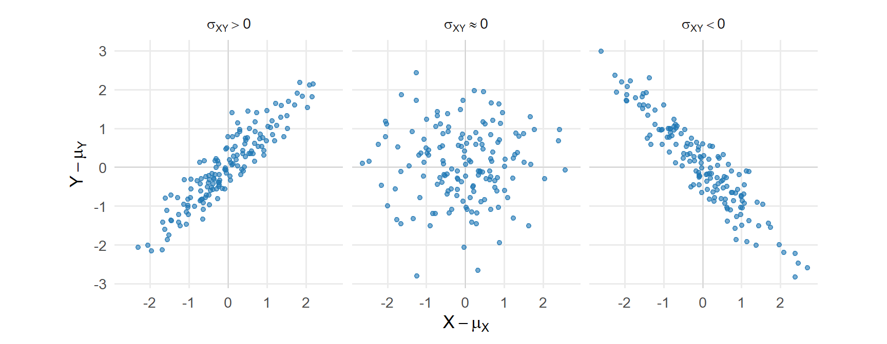
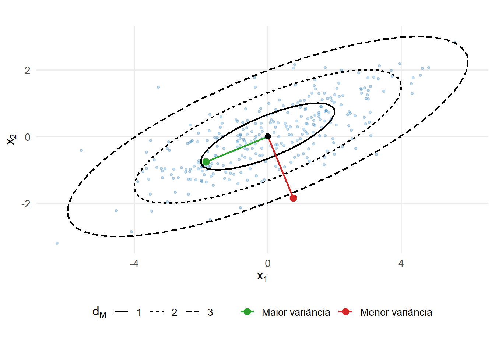
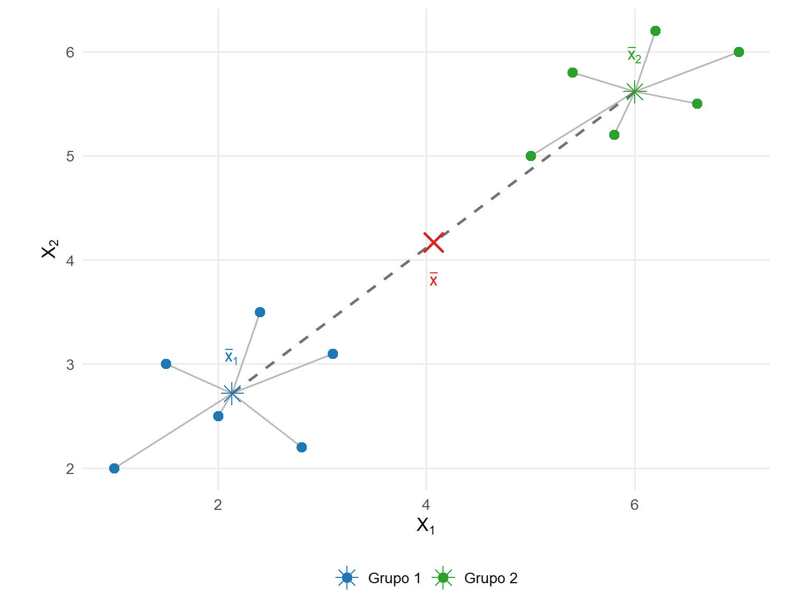

8 Matrizes de covariâncias e correlações
A variância descreve a dispersão de uma variável em torno de sua média. Quando várias variáveis são observadas conjuntamente, também é necessário representar como suas variações se relacionam. A análise separada das variâncias não registra se duas componentes tendem a variar no mesmo sentido, em sentidos opostos ou se apresentam relações lineares de redundância.
A matriz de covariâncias reúne as variâncias individuais e as covariâncias entre todos os pares de componentes de um vetor aleatório. Sua estrutura permite calcular a variância de combinações lineares, caracterizar relações lineares entre as componentes e representar geometricamente a dispersão conjunta (Johnson; Wichern, 2007).
A matriz de correlações resulta da padronização das covariâncias pelos desvios-padrão das variáveis. Seus elementos são adimensionais e permitem comparar a intensidade e o sentido das associações lineares entre variáveis medidas em diferentes unidades.
O objetivo deste capítulo é desenvolver essas estruturas nos níveis populacional e descritivo dos dados observados. As propriedades inferenciais das estatísticas amostrais serão estudadas no Capítulo 10. A distribuição normal multivariada, apresentada no próximo capítulo, utilizará a matriz de covariâncias para construir um modelo probabilístico para a variabilidade conjunta.
8.1 Momentos, centralização e covariância
8.1.1 Vetor de médias e centralização
Retomando Definição 1.2, considere o vetor aleatório
\[ \boldsymbol{\mathsf{X}} = (X_1,\ldots,X_p)^\top \in \mathbb{R}^p, \]
com realização \(\mathbf{x}\in\mathbb{R}^p\). Quando \(n\) realizações são observadas, sua organização em uma matriz \(\mathbf{X}\in\mathbb{R}^{n\times p}\) segue a representação estabelecida na Definição 1.6.
Suponha inicialmente que \(E(|X_j|)<\infty\) para \(j=1,\ldots,p\). O vetor de médias populacional é
\[ \boldsymbol{\mu} = E(\boldsymbol{\mathsf{X}}) = \begin{bmatrix} E(X_1)\\ E(X_2)\\ \vdots\\ E(X_p) \end{bmatrix} = \begin{bmatrix} \mu_1\\ \mu_2\\ \vdots\\ \mu_p \end{bmatrix} \in \mathbb{R}^p. \tag{8.1}\]
O vetor \(\boldsymbol{\mu}\) determina a localização média da distribuição no espaço das observações. Subtraindo esse vetor de \(\boldsymbol{\mathsf{X}}\), obtém-se o vetor aleatório centralizado,
\[ \boldsymbol{\mathsf{X}}_c = \boldsymbol{\mathsf{X}} - \boldsymbol{\mu}. \tag{8.2}\]
Pela linearidade da esperança,
\[ E(\boldsymbol{\mathsf{X}}_c) = E(\boldsymbol{\mathsf{X}}) - \boldsymbol{\mu} = \mathbf{0}. \]
A centralização corresponde a uma translação da distribuição, levando seu vetor de médias à origem. Como estabelecido na Proposição 4.15, a subtração do mesmo vetor de todos os pontos preserva as distâncias entre pares de realizações. Portanto, a centralização altera a localização, mas não a geometria relativa da nuvem de pontos.
A centralização da matriz de dados observada será retomada posteriormente neste capítulo, quando forem construídas a matriz de produtos cruzados e a matriz de covariâncias observada.
8.1.2 Momentos de segunda ordem
O estudo das variâncias e covariâncias exige a existência de momentos de segunda ordem. Neste capítulo, assume-se que
\[ E(X_j^2) < \infty, \qquad j=1,\ldots,p. \]
Essa condição garante também a existência dos primeiros momentos. Além disso, para quaisquer componentes \(X_j\) e \(X_k\), a desigualdade de Cauchy–Schwarz aplicada a variáveis aleatórias de segundo momento finito fornece
\[ E \left( |X_jX_k| \right) \leq \sqrt{ E(X_j^2) E(X_k^2) } < \infty. \]
Portanto, os produtos cruzados necessários à construção das covariâncias possuem esperança finita.
A matriz de segundos momentos em relação à origem é
\[ \mathbf{M}_2 = E \left( \boldsymbol{\mathsf X} \boldsymbol{\mathsf X}^{\top} \right) \in \mathbb{R}^{p\times p}. \]
O produto \(\boldsymbol{\mathsf X}\boldsymbol{\mathsf X}^{\top}\) é o produto externo definido na Definição 1.14. Seus elementos são
\[ \left[ \boldsymbol{\mathsf X} \boldsymbol{\mathsf X}^{\top} \right]_{jk} = X_jX_k, \]
de modo que
\[ \mathbf{M}_2 = \begin{bmatrix} E(X_1^2) & E(X_1X_2) & \cdots & E(X_1X_p)\\ E(X_2X_1) & E(X_2^2) & \cdots & E(X_2X_p)\\ \vdots & \vdots & \ddots & \vdots\\ E(X_pX_1) & E(X_pX_2) & \cdots & E(X_p^2) \end{bmatrix}. \]
A matriz \(\mathbf{M}_2\) utiliza a origem como referência. Seus elementos dependem, portanto, da localização da distribuição e de sua variabilidade conjunta.
Para descrever a dispersão em torno do vetor de médias, utiliza-se o segundo momento central:
\[ \boldsymbol{\Sigma} = E \left[ \left( \boldsymbol{\mathsf X} - \boldsymbol{\mu} \right) \left( \boldsymbol{\mathsf X} - \boldsymbol{\mu} \right)^{\top} \right]. \]
Expandindo o produto e utilizando \(E(\boldsymbol{\mathsf X})=\boldsymbol{\mu}\),
\[ \begin{aligned} \boldsymbol{\Sigma} &= E \left( \boldsymbol{\mathsf X} \boldsymbol{\mathsf X}^{\top} \right) - E(\boldsymbol{\mathsf X}) \boldsymbol{\mu}^{\top} - \boldsymbol{\mu} E(\boldsymbol{\mathsf X})^{\top} + \boldsymbol{\mu} \boldsymbol{\mu}^{\top}\\ &= \mathbf{M}_2 - \boldsymbol{\mu} \boldsymbol{\mu}^{\top}. \end{aligned} \tag{8.3}\]
A identidade Equação 8.3 é a versão matricial da relação univariada
\[ \operatorname{Var}(X) = E(X^2) - [E(X)]^2. \]
A diferença entre \(\mathbf{M}_2\) e \(\boldsymbol{\Sigma}\) está, portanto, no ponto de referência: \(\mathbf{M}_2\) descreve segundos momentos em relação à origem, enquanto \(\boldsymbol{\Sigma}\) descreve a variabilidade em torno da média.
8.1.3 Covariância entre duas variáveis
Considere duas variáveis aleatórias \(X\) e \(Y\), definidas no mesmo espaço de probabilidade, com segundos momentos finitos e médias
\[ \mu_X = E(X) \qquad \text{e} \qquad \mu_Y = E(Y). \]
Definição 8.1 (Covariância populacional) Se \(X\) e \(Y\) são variáveis aleatórias com segundos momentos finitos e médias \(\mu_X=E(X)\) e \(\mu_Y=E(Y)\), a covariância populacional entre \(X\) e \(Y\) é
\[ \operatorname{Cov}(X,Y) = E \left[ (X-\mu_X) (Y-\mu_Y) \right]. \]
A covariância é a esperança do produto dos desvios das duas variáveis em relação às respectivas médias. Seu sinal descreve o sentido predominante da associação linear:
- uma covariância positiva indica predominância de desvios de mesmo sinal;
- uma covariância negativa indica predominância de desvios de sinais opostos;
- uma covariância nula indica ausência de associação linear registrada pela covariância.
A Figura 8.1 apresenta configurações com covariâncias positiva, aproximadamente nula e negativa.
Na primeira configuração, a nuvem de pontos tende a se alongar em uma direção crescente; na terceira, em uma direção decrescente. A configuração central não apresenta orientação linear predominante. O valor da covariância depende também das escalas das variáveis e, por isso, seu módulo não fornece isoladamente uma medida comparável de intensidade entre diferentes pares de variáveis.
Expandindo o produto dos desvios,
\[ \begin{aligned} \operatorname{Cov}(X,Y) &= E \left[ (X-\mu_X)(Y-\mu_Y) \right]\\ &= E(XY) - \mu_XE(Y) - \mu_YE(X) + \mu_X\mu_Y. \end{aligned} \]
Como \(E(X)=\mu_X\) e \(E(Y)=\mu_Y\),
\[ \operatorname{Cov}(X,Y) = E(XY) - E(X)E(Y). \tag{8.4}\]
A expressão Equação 8.4 relaciona a covariância ao momento conjunto \(E(XY)\) e aos primeiros momentos das duas variáveis.
Quando as duas variáveis coincidem,
\[ \operatorname{Cov}(X,X) = E \left[ (X-\mu_X)^2 \right] = \operatorname{Var}(X). \]
A covariância também é simétrica:
\[ \operatorname{Cov}(X,Y) = \operatorname{Cov}(Y,X). \]
Para constantes \(a\), \(b\), \(c\) e \(d\),
\[ \operatorname{Cov}(aX+b,cY+d) = ac\operatorname{Cov}(X,Y). \tag{8.5}\]
A identidade Equação 8.5 mostra que translações não alteram a covariância. Mudanças de escala multiplicam a covariância pelo produto dos fatores aplicados às duas variáveis. Quando somente um desses fatores é negativo, o sinal da covariância é invertido.
Essa dependência das unidades impede a comparação direta entre covariâncias associadas a pares de variáveis em escalas distintas. Se uma variável medida em metros for convertida para centímetros, por exemplo, sua covariância com outra variável será multiplicada por \(100\).
Pela desigualdade de Cauchy–Schwarz,
\[ \left| \operatorname{Cov}(X,Y) \right| \leq \sqrt{ \operatorname{Var}(X) \operatorname{Var}(Y) }. \tag{8.6}\]
O limite Equação 8.6 será utilizado posteriormente para mostrar que a correlação pertence ao intervalo \([-1,1]\).
Exemplo 8.1 (Dependência não linear com covariância nula) Considere
\[ X \sim \operatorname{Uniforme}(-2,2) \]
e
\[ Y = X^2+\varepsilon, \]
em que \(\varepsilon\) é independente de \(X\), possui média zero e segundo momento finito.
A simetria da distribuição de \(X\) em torno de zero implica
\[ E(X) = 0 \qquad \text{e} \qquad E(X^3) = 0. \]
Como \(\varepsilon\) é independente de \(X\),
\[ E(X\varepsilon) = E(X)E(\varepsilon) = 0. \]
Para calcular a covariância entre \(X\) e \(Y\), utiliza-se
\[ \operatorname{Cov}(X,Y) = E(XY)-E(X)E(Y). \]
Como \(Y=X^2+\varepsilon\),
\[ \begin{aligned} E(XY) &= E\left[ X\left(X^2+\varepsilon\right) \right]\\ &= E(X^3) + E(X\varepsilon)\\ &= 0. \end{aligned} \]
Além disso,
\[ E(X)E(Y) = 0, \]
pois \(E(X)=0\). Portanto,
\[ \operatorname{Cov}(X,Y) = E(XY)-E(X)E(Y) = 0. \]
Apesar da covariância nula, \(X\) e \(Y\) não são independentes. Para verificar isso, considere a esperança condicional de \(Y\) dado \(X=x\). Como \[ \begin{aligned} E(Y\mid X=x) &= E\left(X^2+\varepsilon\mid X=x\right)\\ &= x^2 + E(\varepsilon\mid X=x). \end{aligned} \]
Como \(\varepsilon\) é independente de \(X\),
\[ E(\varepsilon\mid X=x) = E(\varepsilon) = 0. \]
Portanto,
\[ E(Y\mid X=x) = x^2. \]
Assim, a média condicional de \(Y\) depende do valor de \(X\). Se \(X\) e \(Y\) fossem independentes, a distribuição condicional de \(Y\) dado \(X=x\) seria a mesma distribuição marginal de \(Y\) e, consequentemente,
\[ E(Y\mid X=x) = E(Y), \]
não dependendo de \(x\). Logo, \(X\) e \(Y\) são dependentes, apesar de apresentarem covariância nula.
A Figura 8.2 ilustra essa relação.

A configuração parabólica evidencia uma dependência que não produz orientação linear global. O exemplo delimita a informação fornecida pela covariância e mostra por que o valor zero não deve ser interpretado, sem hipóteses adicionais, como independência.
As variâncias das componentes e as covariâncias entre todos os pares de componentes podem ser reunidas em uma única matriz.
8.2 Matriz de covariâncias populacional
8.2.1 Definição e interpretação dos elementos
Definição 8.2 (Matriz de covariâncias populacional) Seja \(\boldsymbol{\mathsf X}\in\mathbb{R}^p\) um vetor aleatório com vetor de médias \(\boldsymbol{\mu}\) e segundos momentos finitos. A matriz de covariâncias populacional de \(\boldsymbol{\mathsf X}\) é
\[ \boldsymbol{\Sigma} = \operatorname{Cov} \left( \boldsymbol{\mathsf X} \right) = E \left[ \left( \boldsymbol{\mathsf X} - \boldsymbol{\mu} \right) \left( \boldsymbol{\mathsf X} - \boldsymbol{\mu} \right)^{\top} \right] \in \mathbb{R}^{p\times p}. \tag{8.7}\]
O elemento situado na linha \(j\) e na coluna \(k\) de \(\boldsymbol{\Sigma}\) é
\[ \sigma_{jk} = \operatorname{Cov}(X_j,X_k), \qquad j,k=1,\ldots,p. \]
Assim,
\[ \boldsymbol{\Sigma} = \begin{bmatrix} \operatorname{Var}(X_1) & \operatorname{Cov}(X_1,X_2) & \cdots & \operatorname{Cov}(X_1,X_p) \\ \operatorname{Cov}(X_2,X_1) & \operatorname{Var}(X_2) & \cdots & \operatorname{Cov}(X_2,X_p) \\ \vdots & \vdots & \ddots & \vdots \\ \operatorname{Cov}(X_p,X_1) & \operatorname{Cov}(X_p,X_2) & \cdots & \operatorname{Var}(X_p) \end{bmatrix}. \tag{8.8}\]
Os elementos da diagonal principal são as variâncias,
\[ \sigma_{jj} = \operatorname{Var}(X_j), \]
e os elementos fora da diagonal são as covariâncias entre componentes distintos.
Como
\[ \operatorname{Cov}(X_j,X_k) = \operatorname{Cov}(X_k,X_j), \]
tem-se
\[ \sigma_{jk} = \sigma_{kj}, \]
e \(\boldsymbol{\Sigma}\) é simétrica. Para \(p\) componentes, existem \(p\) variâncias e
\[ \frac{p(p-1)}{2} \]
covariâncias distintas, totalizando
\[ \frac{p(p+1)}{2} \]
elementos distintos.
As unidades dos elementos dependem das variáveis envolvidas. Se \(X_j\) é medida em uma unidade \(u_j\), então
\[ \sigma_{jj} \]
é expressa em \(u_j^2\). Para \(j\neq k\),
\[ \sigma_{jk} \]
é expressa em \(u_ju_k\). Essa dependência das unidades motiva a construção posterior da matriz de correlações.
8.2.2 Variâncias e covariâncias de combinações lineares
Uma combinação linear das componentes de \(\boldsymbol{\mathsf X}\) possui a forma
\[ Y = \mathbf a^\top \boldsymbol{\mathsf X}, \qquad \mathbf a \in \mathbb{R}^p. \]
O vetor \(\mathbf a\) contém os coeficientes da combinação e define uma direção no espaço das variáveis. A combinação linear, já utilizada no Módulo 1, adquire aqui uma interpretação probabilística: sua média e sua variância são determinadas por \(\boldsymbol{\mu}\) e \(\boldsymbol{\Sigma}\).
Proposição 8.1 (Momentos de combinações lineares) Seja \(\boldsymbol{\mathsf X}\in\mathbb{R}^p\) um vetor aleatório com média \(\boldsymbol{\mu}\) e matriz de covariâncias \(\boldsymbol{\Sigma}\). Para quaisquer vetores fixos \(\mathbf a,\mathbf b\in\mathbb{R}^p\),
\[ E \left( \mathbf a^\top\boldsymbol{\mathsf X} \right) = \mathbf a^\top\boldsymbol{\mu}, \tag{8.9}\]
\[ \operatorname{Var} \left( \mathbf a^\top\boldsymbol{\mathsf X} \right) = \mathbf a^\top \boldsymbol{\Sigma} \mathbf a, \tag{8.10}\]
e
\[ \operatorname{Cov} \left( \mathbf a^\top\boldsymbol{\mathsf X}, \mathbf b^\top\boldsymbol{\mathsf X} \right) = \mathbf a^\top \boldsymbol{\Sigma} \mathbf b. \tag{8.11}\]
Comprovação. Pela linearidade da esperança,
\[ E \left( \mathbf a^\top\boldsymbol{\mathsf X} \right) = \mathbf a^\top E(\boldsymbol{\mathsf X}) = \mathbf a^\top\boldsymbol{\mu}. \]
Além disso,
\[ \mathbf a^\top\boldsymbol{\mathsf X} - \mathbf a^\top\boldsymbol{\mu} = \mathbf a^\top \left( \boldsymbol{\mathsf X} - \boldsymbol{\mu} \right). \]
Consequentemente,
\[ \begin{aligned} \operatorname{Var} \left( \mathbf a^\top\boldsymbol{\mathsf X} \right) &= E \left[ \mathbf a^\top \left( \boldsymbol{\mathsf X} - \boldsymbol{\mu} \right) \left( \boldsymbol{\mathsf X} - \boldsymbol{\mu} \right)^\top \mathbf a \right]\\ &= \mathbf a^\top \boldsymbol{\Sigma} \mathbf a. \end{aligned} \]
De modo análogo,
\[ \begin{aligned} & \operatorname{Cov} \left( \mathbf a^\top\boldsymbol{\mathsf X}, \mathbf b^\top\boldsymbol{\mathsf X} \right) \\ &= E \left[ \mathbf a^\top \left( \boldsymbol{\mathsf X} - \boldsymbol{\mu} \right) \left( \boldsymbol{\mathsf X} - \boldsymbol{\mu} \right)^\top \mathbf b \right]\\ &= \mathbf a^\top \boldsymbol{\Sigma} \mathbf b. \end{aligned} \]
A expressão Equação 8.10 mostra que a matriz de covariâncias determina a variabilidade de todas as combinações lineares das componentes. A quantidade
\[ \mathbf a^\top \boldsymbol{\Sigma} \mathbf a \]
é uma forma quadrática no sentido de Definição 2.23. Quando \(\|\mathbf a\|=1\), ela representa a variância da projeção de \(\boldsymbol{\mathsf X}\) sobre a direção unitária \(\mathbf a\).
Essa relação constitui a ligação entre a matriz de covariâncias e a geometria desenvolvida no Módulo 1: diferentes direções podem apresentar diferentes níveis de dispersão.
Exemplo 8.2 (Matriz de covariâncias com três variáveis) Considere
\[ \boldsymbol{\Sigma} = \begin{bmatrix} 4 & 1,5 & -0,8\\ 1,5 & 9 & 0\\ -0,8 & 0 & 1 \end{bmatrix}. \]
As variâncias das três componentes são
\[ \operatorname{Var}(X_1) = 4, \qquad \operatorname{Var}(X_2) = 9, \qquad \operatorname{Var}(X_3) = 1, \]
e as covariâncias distintas são
\[ \operatorname{Cov}(X_1,X_2) = 1,5, \]
\[ \operatorname{Cov}(X_1,X_3) = -0,8, \]
e
\[ \operatorname{Cov}(X_2,X_3) = 0. \]
Considere a combinação linear
\[ Y = X_1 + 0,5X_2 - X_3, \]
com vetor de coeficientes
\[ \mathbf a = \begin{bmatrix} 1\\ 0,5\\ -1 \end{bmatrix}. \]
Pela expressão Equação 8.10,
\[ \begin{aligned} \operatorname{Var}(Y) &= \mathbf a^\top \boldsymbol{\Sigma} \mathbf a\\ &= \begin{bmatrix} 1 & 0,5 & -1 \end{bmatrix} \begin{bmatrix} 4 & 1,5 & -0,8\\ 1,5 & 9 & 0\\ -0,8 & 0 & 1 \end{bmatrix} \begin{bmatrix} 1\\ 0,5\\ -1 \end{bmatrix}\\ &= 10,35. \end{aligned} \]
A variância da combinação depende das variâncias individuais, das covariâncias e dos coeficientes utilizados. A covariância negativa entre \(X_1\) e \(X_3\), por exemplo, contribui positivamente para \(\operatorname{Var}(Y)\) porque os coeficientes dessas duas componentes possuem sinais opostos.
8.2.3 Propriedades estruturais e singularidade
A matriz de covariâncias pertence à classe das matrizes simétricas positivas semidefinidas. A classificação de positividade de matrizes foi estabelecida na Definição 2.24; aqui ela adquire uma interpretação probabilística direta, pois a forma quadrática associada a \(\boldsymbol{\Sigma}\) representa uma variância (Eaton, 2007).
Proposição 8.2 (Caracterização estrutural das matrizes de covariâncias) Uma matriz \(\mathbf C\in\mathbb{R}^{p\times p}\) é matriz de covariâncias de algum vetor aleatório com segundos momentos finitos se, e somente se,
\[ \mathbf C = \mathbf C^\top \]
e
\[ \mathbf C \succeq \mathbf 0. \]
Consequentemente, toda matriz de covariâncias possui elementos diagonais não negativos, autovalores não negativos e submatrizes principais positivas semidefinidas.
Comprovação. Se
\[ \mathbf C = \operatorname{Cov} \left( \boldsymbol{\mathsf X} \right), \]
a simetria decorre de
\[ \operatorname{Cov}(X_j,X_k) = \operatorname{Cov}(X_k,X_j). \]
Além disso, para qualquer \(\mathbf a\in\mathbb{R}^p\),
\[ \mathbf a^\top \mathbf C \mathbf a = \operatorname{Var} \left( \mathbf a^\top \boldsymbol{\mathsf X} \right) \geq 0. \]
Logo, \(\mathbf C\) é positiva semidefinida.
Reciprocamente, suponha que \(\mathbf C\) seja real, simétrica e positiva semidefinida. Pelo Teorema 5.4 e pela raiz quadrada principal definida na Definição 5.9, existe uma matriz simétrica positiva semidefinida \(\mathbf C^{1/2}\) tal que
\[ \mathbf C = \mathbf C^{1/2}\mathbf C^{1/2}. \]
Considere um vetor aleatório
\[ \boldsymbol{\mathsf U} = (U_1,\ldots,U_p)^\top, \]
cujas componentes são independentes e satisfazem
\[ P(U_j=1) = P(U_j=-1) = \frac{1}{2}, \qquad j=1,\ldots,p. \]
Então,
\[ E \left( \boldsymbol{\mathsf U} \right) = \mathbf 0 \]
e
\[ \operatorname{Cov} \left( \boldsymbol{\mathsf U} \right) = \mathbf I_p. \]
Defina
\[ \boldsymbol{\mathsf X} = \mathbf C^{1/2} \boldsymbol{\mathsf U}. \]
Como
\[ E \left( \boldsymbol{\mathsf U} \right) = \mathbf 0, \]
tem-se
\[ E \left( \boldsymbol{\mathsf X} \right) = \mathbf C^{1/2} E \left( \boldsymbol{\mathsf U} \right) = \mathbf 0. \]
Além disso,
\[ E \left( \boldsymbol{\mathsf U} \boldsymbol{\mathsf U}^{\top} \right) = \mathbf I_p. \]
Logo,
\[ \begin{aligned} \operatorname{Cov} \left( \boldsymbol{\mathsf X} \right) &= E \left( \boldsymbol{\mathsf X} \boldsymbol{\mathsf X}^{\top} \right)\\ &= E \left( \mathbf C^{1/2} \boldsymbol{\mathsf U} \boldsymbol{\mathsf U}^{\top} \mathbf C^{1/2} \right)\\ &= \mathbf C^{1/2} E \left( \boldsymbol{\mathsf U} \boldsymbol{\mathsf U}^{\top} \right) \mathbf C^{1/2}\\ &= \mathbf C^{1/2} \mathbf I_p \mathbf C^{1/2}\\ &= \mathbf C. \end{aligned} \]
Portanto, toda matriz real simétrica positiva semidefinida pode ocorrer como matriz de covariâncias.
Essa construção estabelece apenas a existência de um vetor aleatório com matriz de covariâncias \(\mathbf C\) e não exige uma família de distribuições específica.
A semidefinição positiva impõe restrições aos elementos da matriz. Para duas componentes \(X_j\) e \(X_k\), a submatriz principal
\[ \begin{bmatrix} \sigma_{jj} & \sigma_{jk}\\ \sigma_{jk} & \sigma_{kk} \end{bmatrix} \]
também deve ser positiva semidefinida. Logo,
\[ \sigma_{jj}\sigma_{kk} - \sigma_{jk}^2 \geq 0, \]
o que equivale a
\[ |\sigma_{jk}| \leq \sqrt{ \sigma_{jj}\sigma_{kk} }. \]
Esse resultado recupera, no nível matricial, o limite apresentado na Equação 8.6.
A simetria, isoladamente, não é suficiente para caracterizar uma matriz de covariâncias.
Exemplo 8.3 (Matriz simétrica que não pode ser uma matriz de covariâncias) Considere
\[ \mathbf A = \begin{bmatrix} 1 & 2\\ 2 & 1 \end{bmatrix}. \]
A matriz é simétrica. Entretanto, para
\[ \mathbf a = \begin{bmatrix} 1\\ -1 \end{bmatrix}, \]
tem-se
\[ \begin{aligned} \mathbf a^\top \mathbf A \mathbf a &= \begin{bmatrix} 1 & -1 \end{bmatrix} \begin{bmatrix} 1 & 2\\ 2 & 1 \end{bmatrix} \begin{bmatrix} 1\\ -1 \end{bmatrix}\\ &= -2. \end{aligned} \]
Se \(\mathbf A\) fosse uma matriz de covariâncias, esse valor representaria a variância de uma combinação linear, o que é impossível. A matriz é, portanto, simétrica, mas não positiva semidefinida.
Quando
\[ \mathbf a^\top \boldsymbol{\Sigma} \mathbf a > 0 \]
para todo \(\mathbf a\neq\mathbf 0\), a matriz \(\boldsymbol{\Sigma}\) é positiva definida. Pela Equação 8.10, isso significa que toda combinação linear não trivial das componentes possui variância positiva.
A situação muda quando \(\boldsymbol{\Sigma}\) é singular. Nesse caso, aparecerá a expressão quase certamente. Seja \(U\) uma variável aleatória definida em um espaço de probabilidade \((\Omega,\mathcal{F},P)\) e seja \(c\in\mathbb{R}\). Escrever
\[ U=c \qquad \text{quase certamente} \]
significa que
\[ P\left( \{\omega\in\Omega:U(\omega)=c\} \right) = P(U=c) = 1. \]
Equivalentemente, a igualdade pode falhar apenas em um conjunto de resultados de probabilidade zero.
Proposição 8.3 (Caracterização da singularidade da matriz de covariâncias) Seja \(\boldsymbol{\mathsf X}\in\mathbb{R}^p\) um vetor aleatório com média \(\boldsymbol{\mu}\) e matriz de covariâncias \(\boldsymbol{\Sigma}\). As seguintes afirmações são equivalentes:
\(\boldsymbol{\Sigma}\) é singular;
existe \(\mathbf a\neq\mathbf 0\) tal que
\[ \mathbf a^\top \boldsymbol{\Sigma} \mathbf a = 0; \]
existe \(\mathbf a\neq\mathbf 0\) tal que
\[ \operatorname{Var} \left( \mathbf a^\top \boldsymbol{\mathsf X} \right) = 0; \]
existe \(\mathbf a\neq\mathbf 0\) tal que
\[ \mathbf a^\top \left( \boldsymbol{\mathsf X} - \boldsymbol{\mu} \right) = 0 \qquad \text{quase certamente}. \]
Comprovação. Como \(\boldsymbol{\Sigma}\) é simétrica e positiva semidefinida, o Teorema 5.4 garante uma decomposição com autovalores não negativos. A matriz é singular se, e somente se, pelo menos um desses autovalores é zero. Nesse caso, existe \(\mathbf a\neq\mathbf 0\) no núcleo de \(\boldsymbol{\Sigma}\) e, portanto,
\[ \mathbf a^\top \boldsymbol{\Sigma} \mathbf a = 0. \]
Reciprocamente, para uma matriz positiva semidefinida,
\[ \mathbf a^\top \boldsymbol{\Sigma} \mathbf a = 0 \]
implica que \(\mathbf a\) pertence ao núcleo de \(\boldsymbol{\Sigma}\).
Pela Equação 8.10,
\[ \mathbf a^\top \boldsymbol{\Sigma} \mathbf a = \operatorname{Var} \left( \mathbf a^\top \boldsymbol{\mathsf X} \right), \]
o que estabelece a equivalência entre as duas condições seguintes.
Uma variável aleatória possui variância zero se, e somente se, é constante quase certamente. Como
\[ E \left[ \mathbf a^\top \left( \boldsymbol{\mathsf X} - \boldsymbol{\mu} \right) \right] = 0, \]
essa constante deve ser zero. Portanto,
\[ \operatorname{Var} \left( \mathbf a^\top \boldsymbol{\mathsf X} \right) = 0 \]
se, e somente se,
\[ \mathbf a^\top \left( \boldsymbol{\mathsf X} - \boldsymbol{\mu} \right) = 0 \qquad \text{quase certamente}. \]
A última condição da Proposição 8.3 também pode ser escrita como
\[ \mathbf a^\top \boldsymbol{\mathsf X} = \mathbf a^\top \boldsymbol{\mu} \qquad \text{quase certamente}. \]
Portanto, a singularidade de \(\boldsymbol{\Sigma}\) corresponde à existência de uma relação afim exata e não trivial entre as componentes do vetor aleatório.
Em termos geométricos, os vetores pertencentes a
\[ \mathcal{N} \left( \boldsymbol{\Sigma} \right) \]
determinam direções de variância nula. Como \(\boldsymbol{\Sigma}\) é simétrica, a relação entre núcleo e espaço coluna desenvolvida no Módulo 1 permite escrever
\[ \mathcal{N} \left( \boldsymbol{\Sigma} \right)^\perp = \mathcal{C} \left( \boldsymbol{\Sigma} \right). \]
Consequentemente,
\[ \boldsymbol{\mathsf X} - \boldsymbol{\mu} \in \mathcal{C} \left( \boldsymbol{\Sigma} \right) \qquad \text{quase certamente}. \]
Se
\[ \operatorname{posto} \left( \boldsymbol{\Sigma} \right) = r < p, \]
a variabilidade do vetor centralizado está restrita a um subespaço de dimensão \(r\). O vetor original está, portanto, restrito quase certamente ao subespaço afim
\[ \boldsymbol{\mu} + \mathcal{C} \left( \boldsymbol{\Sigma} \right). \]
A matriz de covariâncias também pode ser utilizada para descrever conjuntamente dois vetores aleatórios distintos. Essa extensão produz matrizes retangulares de covariâncias cruzadas e permite representar as relações lineares entre dois blocos de variáveis.
8.3 Covariâncias entre vetores e transformações
8.3.1 Covariâncias cruzadas e vetores particionados
A covariância pode relacionar componentes pertencentes a dois vetores aleatórios distintos. Considere
\[ \boldsymbol{\mathsf X} \in \mathbb{R}^p \qquad \text{e} \qquad \boldsymbol{\mathsf Y} \in \mathbb{R}^q, \]
com vetores de médias
\[ \boldsymbol{\mu}_X = E \left( \boldsymbol{\mathsf X} \right) \in \mathbb{R}^p \]
e
\[ \boldsymbol{\mu}_Y = E \left( \boldsymbol{\mathsf Y} \right) \in \mathbb{R}^q. \]
Admite-se que todas as componentes possuam segundos momentos finitos.
Definição 8.3 (Matriz de covariâncias cruzadas) A matriz de covariâncias cruzadas entre \(\boldsymbol{\mathsf X}\) e \(\boldsymbol{\mathsf Y}\) é
\[ \boldsymbol{\Sigma}_{XY} = \operatorname{Cov} \left( \boldsymbol{\mathsf X}, \boldsymbol{\mathsf Y} \right) = E \left[ \left( \boldsymbol{\mathsf X} - \boldsymbol{\mu}_X \right) \left( \boldsymbol{\mathsf Y} - \boldsymbol{\mu}_Y \right)^\top \right] \in \mathbb{R}^{p\times q}, \tag{8.12}\]
em que \(\boldsymbol{\mathsf X}\in\mathbb R^p\) e \(\boldsymbol{\mathsf Y}\in\mathbb R^q\) possuem segundos momentos finitos e médias \(\boldsymbol{\mu}_X\) e \(\boldsymbol{\mu}_Y\), respectivamente.
O elemento situado na linha \(j\) e na coluna \(k\) é
\[ \left( \boldsymbol{\Sigma}_{XY} \right)_{jk} = \operatorname{Cov} \left( X_j,Y_k \right), \]
para \(j=1,\ldots,p\) e \(k=1,\ldots,q\). Portanto,
\[ \boldsymbol{\Sigma}_{XY} = \begin{bmatrix} \operatorname{Cov}(X_1,Y_1) & \cdots & \operatorname{Cov}(X_1,Y_q) \\ \vdots & \ddots & \vdots \\ \operatorname{Cov}(X_p,Y_1) & \cdots & \operatorname{Cov}(X_p,Y_q) \end{bmatrix}. \]
A orientação da matriz depende da ordem dos vetores. Invertendo essa ordem,
\[ \boldsymbol{\Sigma}_{YX} = \boldsymbol{\Sigma}_{XY}^{\top}. \tag{8.13}\]
Assim,
\[ \boldsymbol{\Sigma}_{XY} \in \mathbb{R}^{p\times q}, \qquad \boldsymbol{\Sigma}_{YX} \in \mathbb{R}^{q\times p}. \]
Mesmo quando \(p=q\), não se tem em geral
\[ \boldsymbol{\Sigma}_{XY} = \boldsymbol{\Sigma}_{YX}, \]
pois uma matriz de covariâncias cruzadas não precisa ser simétrica.
Proposição 8.4 (Covariância entre combinações de dois vetores) Sejam \(\boldsymbol{\mathsf X}\in\mathbb R^p\) e \(\boldsymbol{\mathsf Y}\in\mathbb R^q\) vetores aleatórios com matriz de covariâncias cruzadas \(\boldsymbol{\Sigma}_{XY}\). Para quaisquer vetores fixos
\[ \mathbf a \in \mathbb{R}^p \qquad \text{e} \qquad \mathbf b \in \mathbb{R}^q, \]
tem-se
\[ \operatorname{Cov} \left( \mathbf a^\top\boldsymbol{\mathsf X}, \mathbf b^\top\boldsymbol{\mathsf Y} \right) = \mathbf a^\top \boldsymbol{\Sigma}_{XY} \mathbf b. \tag{8.14}\]
Comprovação. As versões centralizadas das duas combinações são
\[ \mathbf a^\top \left( \boldsymbol{\mathsf X} - \boldsymbol{\mu}_X \right) \]
e
\[ \mathbf b^\top \left( \boldsymbol{\mathsf Y} - \boldsymbol{\mu}_Y \right). \]
Logo,
\[ \begin{aligned} & \operatorname{Cov} \left( \mathbf a^\top\boldsymbol{\mathsf X}, \mathbf b^\top\boldsymbol{\mathsf Y} \right) \\ &= E \left[ \mathbf a^\top \left( \boldsymbol{\mathsf X} - \boldsymbol{\mu}_X \right) \left( \boldsymbol{\mathsf Y} - \boldsymbol{\mu}_Y \right)^\top \mathbf b \right] \\ &= \mathbf a^\top \boldsymbol{\Sigma}_{XY} \mathbf b. \end{aligned} \]
Em particular,
\[ \boldsymbol{\Sigma}_{XY} = \mathbf 0 \]
se, e somente se,
\[ \operatorname{Cov} \left( \mathbf a^\top\boldsymbol{\mathsf X}, \mathbf b^\top\boldsymbol{\mathsf Y} \right) = 0 \]
para todos os vetores \(\mathbf a\in\mathbb{R}^p\) e \(\mathbf b\in\mathbb{R}^q\). Nesse caso, nenhuma combinação linear do primeiro bloco possui covariância não nula com uma combinação linear do segundo.
A condição
\[ \boldsymbol{\Sigma}_{XY} = \mathbf 0 \]
não implica, em uma distribuição geral, independência entre os vetores. Essa relação será retomada no Capítulo 9 sob a distribuição normal multivariada.
Os dois vetores podem ser reunidos em um único vetor particionado:
\[ \boldsymbol{\mathsf V} = \begin{bmatrix} \boldsymbol{\mathsf X}\\ \boldsymbol{\mathsf Y} \end{bmatrix} \in \mathbb{R}^{p+q}. \]
Seu vetor de médias é
\[ \boldsymbol{\mu}_V = \begin{bmatrix} \boldsymbol{\mu}_X\\ \boldsymbol{\mu}_Y \end{bmatrix}, \]
e sua matriz de covariâncias pode ser representada por blocos, conforme a estrutura de matrizes particionadas definida na Definição 2.25:
\[ \boldsymbol{\Sigma}_V = \begin{bmatrix} \boldsymbol{\Sigma}_{XX} & \boldsymbol{\Sigma}_{XY} \\ \boldsymbol{\Sigma}_{YX} & \boldsymbol{\Sigma}_{YY} \end{bmatrix}, \tag{8.15}\]
em que
\[ \boldsymbol{\Sigma}_{XX} = \operatorname{Cov} \left( \boldsymbol{\mathsf X} \right) \]
e
\[ \boldsymbol{\Sigma}_{YY} = \operatorname{Cov} \left( \boldsymbol{\mathsf Y} \right). \]
Os blocos diagonais descrevem a dispersão interna de cada vetor, enquanto os blocos fora da diagonal descrevem as covariâncias entre suas componentes.
Como \(\boldsymbol{\Sigma}_V\) é uma matriz de covariâncias, ela é simétrica e positiva semidefinida. Essa condição restringe conjuntamente seus blocos. Em particular, \(\boldsymbol{\Sigma}_{XY}\) não pode ser especificada arbitrariamente depois de fixadas \(\boldsymbol{\Sigma}_{XX}\) e \(\boldsymbol{\Sigma}_{YY}\).
8.3.1.1 Complemento de Schur e dispersão residual
O complemento de Schur já foi definido na Definição 2.26. Aplicado à matriz de covariâncias particionada, ele recebe uma interpretação estatística de segunda ordem.
Suponha que
\[ \boldsymbol{\Sigma}_{YY} \succ \mathbf 0. \]
O complemento de Schur de \(\boldsymbol{\Sigma}_{YY}\) em \(\boldsymbol{\Sigma}_V\) é
\[ \boldsymbol{\Sigma}_{XX\cdot Y} = \boldsymbol{\Sigma}_{XX} - \boldsymbol{\Sigma}_{XY} \boldsymbol{\Sigma}_{YY}^{-1} \boldsymbol{\Sigma}_{YX}. \tag{8.16}\]
Pelo resultado de positividade do complemento de Schur no Teorema 2.9,
\[ \boldsymbol{\Sigma}_{XX\cdot Y} \succeq \mathbf 0. \]
A expressão também pode ser interpretada diretamente como uma covariância residual.
Proposição 8.5 (Complemento de Schur e covariância residual) Sejam
\[ \boldsymbol{\mathsf X} \in \mathbb R^p \qquad \text{e} \qquad \boldsymbol{\mathsf Y} \in \mathbb R^q \]
vetores aleatórios com segundos momentos finitos, vetores de médias
\[ \boldsymbol{\mu}_X = E \left( \boldsymbol{\mathsf X} \right) \qquad \text{e} \qquad \boldsymbol{\mu}_Y = E \left( \boldsymbol{\mathsf Y} \right), \]
e matriz de covariâncias conjunta
\[ \operatorname{Cov} \left( \begin{bmatrix} \boldsymbol{\mathsf X}\\ \boldsymbol{\mathsf Y} \end{bmatrix} \right) = \begin{bmatrix} \boldsymbol{\Sigma}_{XX} & \boldsymbol{\Sigma}_{XY}\\ \boldsymbol{\Sigma}_{YX} & \boldsymbol{\Sigma}_{YY} \end{bmatrix}. \]
Se
\[ \boldsymbol{\Sigma}_{YY} \succ \mathbf0, \]
o complemento de Schur
\[ \boldsymbol{\Sigma}_{XX\cdot Y} = \boldsymbol{\Sigma}_{XX} - \boldsymbol{\Sigma}_{XY} \boldsymbol{\Sigma}_{YY}^{-1} \boldsymbol{\Sigma}_{YX} \]
é a menor matriz de covariâncias residuais, segundo a ordem de Loewner, entre as matrizes obtidas ao aproximar linearmente \(\boldsymbol{\mathsf X}_c\) por \(\mathbf L\boldsymbol{\mathsf Y}_c\), com
\[ \mathbf L \in \mathbb R^{p\times q}. \]
Para
\[ \mathbf L^\star = \boldsymbol{\Sigma}_{XY} \boldsymbol{\Sigma}_{YY}^{-1}, \]
tem-se
\[ \operatorname{Cov} \left( \boldsymbol{\mathsf R}_{\mathbf L^\star} \right) = \boldsymbol{\Sigma}_{XX\cdot Y}, \]
e, para qualquer
\[ \mathbf L \in \mathbb R^{p\times q}, \]
tem-se
\[ \operatorname{Cov} \left( \boldsymbol{\mathsf R}_{\mathbf L} \right) - \boldsymbol{\Sigma}_{XX\cdot Y} \succeq \mathbf0, \]
em que
\[ \boldsymbol{\mathsf R}_{\mathbf L} = \boldsymbol{\mathsf X}_c - \mathbf L \boldsymbol{\mathsf Y}_c, \]
\[ \boldsymbol{\mathsf X}_c = \boldsymbol{\mathsf X} - \boldsymbol{\mu}_X \qquad \text{e} \qquad \boldsymbol{\mathsf Y}_c = \boldsymbol{\mathsf Y} - \boldsymbol{\mu}_Y. \]
Comprovação. Para uma matriz arbitrária \(\mathbf L\),
\[ \begin{aligned} \operatorname{Cov} \left( \boldsymbol{\mathsf R}_{\mathbf L} \right) &= \boldsymbol{\Sigma}_{XX} - \mathbf L \boldsymbol{\Sigma}_{YX} - \boldsymbol{\Sigma}_{XY} \mathbf L^\top + \mathbf L \boldsymbol{\Sigma}_{YY} \mathbf L^\top. \end{aligned} \]
Substituindo
\[ \mathbf L^\star = \boldsymbol{\Sigma}_{XY} \boldsymbol{\Sigma}_{YY}^{-1}, \]
a expressão pode ser reorganizada como
\[ \begin{aligned} \operatorname{Cov} \left( \boldsymbol{\mathsf R}_{\mathbf L} \right) &= \boldsymbol{\Sigma}_{XX\cdot Y} \\ &\quad+ \left( \mathbf L-\mathbf L^\star \right) \boldsymbol{\Sigma}_{YY} \left( \mathbf L-\mathbf L^\star \right)^\top. \end{aligned} \]
Como \(\boldsymbol{\Sigma}_{YY}\) é positiva definida,
\[ \left( \mathbf L-\mathbf L^\star \right) \boldsymbol{\Sigma}_{YY} \left( \mathbf L-\mathbf L^\star \right)^\top \succeq \mathbf 0. \]
A diferença entre a covariância residual correspondente a qualquer \(\mathbf L\) e aquela obtida com \(\mathbf L^\star\) é, portanto, positiva semidefinida.
Essa interpretação depende apenas dos segundos momentos e não exige normalidade. Sob normalidade conjunta, o mesmo complemento de Schur aparecerá no Capítulo 9 como matriz de covariâncias da distribuição condicional de um bloco dado o outro.
Exemplo 8.4 (Covariâncias entre dois blocos) Considere
\[ \boldsymbol{\mathsf X} = \begin{bmatrix} X_1\\ X_2 \end{bmatrix} \]
e
\[ \boldsymbol{\mathsf Y} = \begin{bmatrix} Y_1\\ Y_2\\ Y_3 \end{bmatrix}, \]
com
\[ \boldsymbol{\Sigma}_{XY} = \begin{bmatrix} 2 & -1 & 0,5\\ 1 & 3 & -2 \end{bmatrix}. \]
Para as combinações
\[ U = X_1-2X_2 \]
e
\[ V = Y_1+Y_2, \]
os vetores de coeficientes são
\[ \mathbf a = \begin{bmatrix} 1\\ -2 \end{bmatrix} \]
e
\[ \mathbf b = \begin{bmatrix} 1\\ 1\\ 0 \end{bmatrix}. \]
Pela expressão Equação 8.14,
\[ \begin{aligned} \operatorname{Cov}(U,V) &= \mathbf a^\top \boldsymbol{\Sigma}_{XY} \mathbf b\\ &= \begin{bmatrix} 1 & -2 \end{bmatrix} \begin{bmatrix} 2 & -1 & 0,5\\ 1 & 3 & -2 \end{bmatrix} \begin{bmatrix} 1\\ 1\\ 0 \end{bmatrix}\\ &= -7. \end{aligned} \]
A covariância entre \(U\) e \(V\) resulta conjuntamente das covariâncias entre todas as componentes que participam das duas combinações lineares.
8.3.2 Transformações afins da média e da covariância
As transformações afins foram definidas na Definição 4.7. No contexto probabilístico, interessa determinar como elas modificam a média e a matriz de covariâncias.
Considere
\[ \boldsymbol{\mathsf U} = \mathbf A \boldsymbol{\mathsf X} + \mathbf c, \]
em que
\[ \boldsymbol{\mathsf X} \in \mathbb{R}^p, \qquad \mathbf A \in \mathbb{R}^{r\times p}, \qquad \mathbf c \in \mathbb{R}^r. \]
Proposição 8.6 (Média e covariância sob transformação afim) Seja \(\boldsymbol{\mathsf X}\in\mathbb R^p\) um vetor aleatório com média \(\boldsymbol{\mu}_X\) e matriz de covariâncias \(\boldsymbol{\Sigma}_{XX}\). Para
\[ \boldsymbol{\mathsf U} = \mathbf A \boldsymbol{\mathsf X} + \mathbf c, \qquad \mathbf A\in\mathbb R^{r\times p}, \qquad \mathbf c\in\mathbb R^r, \]
tem-se
\[ E \left( \boldsymbol{\mathsf U} \right) = \mathbf A \boldsymbol{\mu}_X + \mathbf c \tag{8.17}\]
e
\[ \operatorname{Cov} \left( \boldsymbol{\mathsf U} \right) = \mathbf A \boldsymbol{\Sigma}_{XX} \mathbf A^\top. \tag{8.18}\]
Comprovação. Pela linearidade da esperança,
\[ E \left( \mathbf A\boldsymbol{\mathsf X}+\mathbf c \right) = \mathbf A\boldsymbol{\mu}_X+\mathbf c. \]
O vetor transformado centralizado é
\[ \begin{aligned} \boldsymbol{\mathsf U} - E \left( \boldsymbol{\mathsf U} \right) &= \mathbf A \boldsymbol{\mathsf X} + \mathbf c - \mathbf A \boldsymbol{\mu}_X - \mathbf c\\ &= \mathbf A \left( \boldsymbol{\mathsf X} - \boldsymbol{\mu}_X \right). \end{aligned} \]
Portanto,
\[ \begin{aligned} \operatorname{Cov} \left( \boldsymbol{\mathsf U} \right) &= E \left[ \mathbf A \left( \boldsymbol{\mathsf X} - \boldsymbol{\mu}_X \right) \left( \boldsymbol{\mathsf X} - \boldsymbol{\mu}_X \right)^\top \mathbf A^\top \right]\\ &= \mathbf A \boldsymbol{\Sigma}_{XX} \mathbf A^\top. \end{aligned} \]
A ausência do vetor \(\mathbf c\) na Equação 8.18 confirma que translações alteram a localização, mas não a matriz de covariâncias.
Quando
\[ r=1 \qquad \text{e} \qquad \mathbf A = \mathbf a^\top, \]
a expressão reduz-se a
\[ \operatorname{Var} \left( \mathbf a^\top \boldsymbol{\mathsf X} \right) = \mathbf a^\top \boldsymbol{\Sigma}_{XX} \mathbf a, \]
recuperando Equação 8.10.
Se \(\mathbf A\) é diagonal,
\[ \mathbf A = \operatorname{diag} \left( a_1,\ldots,a_p \right), \]
então
\[ \operatorname{Cov} \left( a_jX_j,a_kX_k \right) = a_ja_k\sigma_{jk}. \]
Em particular,
\[ \operatorname{Var} \left( a_jX_j \right) = a_j^2\sigma_{jj}. \]
Se \(\mathbf Q\in\mathbb{R}^{p\times p}\) é ortogonal no sentido de Definição 2.18,
\[ \operatorname{Cov} \left( \mathbf Q\boldsymbol{\mathsf X} \right) = \mathbf Q \boldsymbol{\Sigma}_{XX} \mathbf Q^\top. \]
Como \(\mathbf Q^\top=\mathbf Q^{-1}\), essa transformação produz uma matriz semelhante a \(\boldsymbol{\Sigma}_{XX}\) e preserva seus autovalores. A interpretação estatística dessa propriedade será retomada na geometria da covariância.
Exemplo 8.5 (Transformação de duas variáveis) Considere
\[ \boldsymbol{\Sigma}_{XX} = \begin{bmatrix} 4 & 2\\ 2 & 9 \end{bmatrix} \]
e
\[ \boldsymbol{\mathsf U} = \mathbf A \boldsymbol{\mathsf X}, \]
com
\[ \mathbf A = \begin{bmatrix} 1 & 1\\ 1 & -1 \end{bmatrix}. \]
As componentes transformadas são
\[ U_1 = X_1+X_2 \]
e
\[ U_2 = X_1-X_2. \]
Pela expressão Equação 8.18,
\[ \begin{aligned} \operatorname{Cov} \left( \boldsymbol{\mathsf U} \right) &= \mathbf A \boldsymbol{\Sigma}_{XX} \mathbf A^\top\\ &= \begin{bmatrix} 1 & 1\\ 1 & -1 \end{bmatrix} \begin{bmatrix} 4 & 2\\ 2 & 9 \end{bmatrix} \begin{bmatrix} 1 & 1\\ 1 & -1 \end{bmatrix}\\ &= \begin{bmatrix} 17 & -5\\ -5 & 9 \end{bmatrix}. \end{aligned} \]
Logo,
\[ \operatorname{Var}(U_1) = 17, \qquad \operatorname{Var}(U_2) = 9 \]
e
\[ \operatorname{Cov}(U_1,U_2) = -5. \]
A transformação modifica simultaneamente as variâncias das componentes e a covariância entre elas.
As covariâncias cruzadas também se transformam de maneira compatível.
Proposição 8.7 (Covariância cruzada sob transformações afins) Sejam \(\boldsymbol{\mathsf X}\in\mathbb R^p\) e \(\boldsymbol{\mathsf Y}\in\mathbb R^q\) vetores aleatórios com matriz de covariâncias cruzadas \(\boldsymbol{\Sigma}_{XY}\). Considere
\[ \boldsymbol{\mathsf U} = \mathbf A_X \boldsymbol{\mathsf X} + \mathbf c \]
e
\[ \boldsymbol{\mathsf V} = \mathbf A_Y \boldsymbol{\mathsf Y} + \mathbf d, \]
com
\[ \mathbf A_X \in \mathbb{R}^{r\times p}, \qquad \mathbf A_Y \in \mathbb{R}^{s\times q}, \qquad \mathbf c\in\mathbb R^r, \qquad \mathbf d\in\mathbb R^s. \]
Então,
\[ \operatorname{Cov} \left( \boldsymbol{\mathsf U}, \boldsymbol{\mathsf V} \right) = \mathbf A_X \boldsymbol{\Sigma}_{XY} \mathbf A_Y^\top. \tag{8.19}\]
Comprovação. Após a centralização,
\[ \boldsymbol{\mathsf U} - E \left( \boldsymbol{\mathsf U} \right) = \mathbf A_X \left( \boldsymbol{\mathsf X} - \boldsymbol{\mu}_X \right) \]
e
\[ \boldsymbol{\mathsf V} - E \left( \boldsymbol{\mathsf V} \right) = \mathbf A_Y \left( \boldsymbol{\mathsf Y} - \boldsymbol{\mu}_Y \right). \]
Logo,
\[ \begin{aligned} \operatorname{Cov} \left( \boldsymbol{\mathsf U}, \boldsymbol{\mathsf V} \right) &= E \left[ \mathbf A_X \left( \boldsymbol{\mathsf X} - \boldsymbol{\mu}_X \right) \left( \boldsymbol{\mathsf Y} - \boldsymbol{\mu}_Y \right)^\top \mathbf A_Y^\top \right]\\ &= \mathbf A_X \boldsymbol{\Sigma}_{XY} \mathbf A_Y^\top. \end{aligned} \]
As expressões Equação 8.18 e Equação 8.19 mostram que a matriz de covariâncias responde de maneira sistemática às transformações lineares. A padronização das componentes constitui um caso particular dessa estrutura.
8.4 Padronização e matriz de correlações
8.4.1 Matriz de correlações populacional
As covariâncias dependem das unidades de medida das variáveis. Para retirar as escalas marginais, suponha que
\[ \sigma_{jj} = \operatorname{Var}(X_j) > 0, \qquad j=1,\ldots,p. \]
Defina a matriz diagonal das variâncias populacionais por
\[ \mathbf D_{\Sigma} = \operatorname{diag} \left( \sigma_{11}, \ldots, \sigma_{pp} \right). \tag{8.20}\]
Como todas as variâncias são positivas,
\[ \mathbf D_{\Sigma} \succ \mathbf 0 \]
e existem as matrizes diagonais
\[ \mathbf D_{\Sigma}^{1/2} = \operatorname{diag} \left( \sqrt{\sigma_{11}}, \ldots, \sqrt{\sigma_{pp}} \right) \]
e
\[ \mathbf D_{\Sigma}^{-1/2} = \operatorname{diag} \left( \frac{1}{\sqrt{\sigma_{11}}}, \ldots, \frac{1}{\sqrt{\sigma_{pp}}} \right). \]
Definição 8.4 (Vetor aleatório padronizado) Se \(\boldsymbol{\mathsf X}\in\mathbb R^p\) possui média \(\boldsymbol{\mu}\) e variâncias marginais positivas, o vetor aleatório marginalmente padronizado correspondente é
\[ \boldsymbol{\mathsf Z} = \mathbf D_{\Sigma}^{-1/2} \left( \boldsymbol{\mathsf X} - \boldsymbol{\mu} \right), \tag{8.21}\]
em que \(\mathbf D_{\Sigma}\succ\mathbf 0\) é a matriz diagonal das variâncias populacionais e
\[ \mathbf D_{\Sigma}^{-1/2} = \operatorname{diag} \left( \frac{1}{\sqrt{\sigma_{11}}}, \ldots, \frac{1}{\sqrt{\sigma_{pp}}} \right). \]
Sua componente \(j\) é
\[ Z_j = \frac{ X_j-\mu_j }{ \sqrt{\sigma_{jj}} }. \]
Assim,
\[ E(Z_j) = 0 \]
e
\[ \operatorname{Var}(Z_j) = 1. \]
Em forma vetorial,
\[ E \left( \boldsymbol{\mathsf Z} \right) = \mathbf 0. \]
Aplicando Equação 8.18,
\[ \operatorname{Cov} \left( \boldsymbol{\mathsf Z} \right) = \mathbf D_{\Sigma}^{-1/2} \boldsymbol{\Sigma} \mathbf D_{\Sigma}^{-1/2}. \]
Definição 8.5 (Matriz de correlações populacional) A matriz de correlações populacional de \(\boldsymbol{\mathsf X}\in\mathbb R^p\) é
\[ \boldsymbol{\mathcal R} = \mathbf D_{\Sigma}^{-1/2} \boldsymbol{\Sigma} \mathbf D_{\Sigma}^{-1/2}, \tag{8.22}\]
em que \(\boldsymbol{\Sigma}\) é a matriz de covariâncias de \(\boldsymbol{\mathsf X}\) e
\[ \mathbf D_{\Sigma} = \operatorname{diag} \left( \sigma_{11}, \ldots, \sigma_{pp} \right), \]
com
\[ \sigma_{jj} > 0, \qquad j=1,\ldots,p. \]
O símbolo \(\boldsymbol{\mathcal R}\) é reservado à matriz populacional. Posteriormente, \(\boldsymbol{\mathsf R}\) representará a matriz de correlações amostral, enquanto \(\mathbf R\) representará seu valor calculado a partir de uma amostra observada.
A matriz \(\boldsymbol{\mathcal R}\) possui a forma
\[ \boldsymbol{\mathcal R} = \begin{bmatrix} 1 & \rho_{12} & \cdots & \rho_{1p} \\ \rho_{21} & 1 & \cdots & \rho_{2p} \\ \vdots & \vdots & \ddots & \vdots \\ \rho_{p1} & \rho_{p2} & \cdots & 1 \end{bmatrix}, \]
em que
\[ \rho_{jk} = \operatorname{Corr} \left( X_j,X_k \right) = \frac{ \sigma_{jk} }{ \sqrt{ \sigma_{jj}\sigma_{kk} } }. \tag{8.23}\]
Equivalentemente,
\[ \rho_{jk} = \operatorname{Cov} \left( Z_j,Z_k \right). \]
A correlação é adimensional porque o numerador e o denominador de Equação 8.23 possuem as mesmas unidades.
A relação entre covariâncias e correlações pode ser invertida:
\[ \boldsymbol{\Sigma} = \mathbf D_{\Sigma}^{1/2} \boldsymbol{\mathcal R} \mathbf D_{\Sigma}^{1/2}. \tag{8.24}\]
Portanto, \(\boldsymbol{\Sigma}\) pode ser decomposta em dois elementos:
- \(\mathbf D_{\Sigma}\) registra as variâncias e, consequentemente, as escalas marginais;
- \(\boldsymbol{\mathcal R}\) registra a estrutura de associação linear após a remoção dessas escalas.
A matriz de correlações isoladamente não permite recuperar as variâncias originais.
Exemplo 8.6 (Matriz de correlações obtida por uma transformação de padronização) Considere um vetor aleatório
\[ \boldsymbol{\mathsf X} = \begin{bmatrix} X_1\\ X_2 \end{bmatrix} \]
com vetor de médias \(\boldsymbol{\mu}\) e matriz de covariâncias
\[ \boldsymbol{\Sigma} = \begin{bmatrix} 16 & 12\\ 12 & 25 \end{bmatrix}. \]
Os desvios-padrão populacionais são
\[ \sqrt{\sigma_{11}} = 4 \qquad \text{e} \qquad \sqrt{\sigma_{22}} = 5. \]
Portanto,
\[ \mathbf D_{\Sigma} = \begin{bmatrix} 16 & 0\\ 0 & 25 \end{bmatrix} \]
e
\[ \mathbf D_{\Sigma}^{-1/2} = \begin{bmatrix} 1/4 & 0\\ 0 & 1/5 \end{bmatrix}. \]
Considere a transformação de padronização
\[ \boldsymbol{\mathsf Z} = \mathbf D_{\Sigma}^{-1/2} \left( \boldsymbol{\mathsf X} - \boldsymbol{\mu} \right). \]
Ela pode ser escrita como a transformação afim
\[ \boldsymbol{\mathsf Z} = \mathbf A \boldsymbol{\mathsf X} + \mathbf c, \]
com
\[ \mathbf A = \mathbf D_{\Sigma}^{-1/2} \]
e
\[ \mathbf c = - \mathbf D_{\Sigma}^{-1/2} \boldsymbol{\mu}. \]
Utilizando Proposição 8.6,
\[ \operatorname{Cov} \left( \boldsymbol{\mathsf Z} \right) = \mathbf A \boldsymbol{\Sigma} \mathbf A^\top. \]
Como \(\mathbf A\) é diagonal e simétrica,
\[ \begin{aligned} \operatorname{Cov} \left( \boldsymbol{\mathsf Z} \right) &= \begin{bmatrix} 1/4 & 0\\ 0 & 1/5 \end{bmatrix} \begin{bmatrix} 16 & 12\\ 12 & 25 \end{bmatrix} \begin{bmatrix} 1/4 & 0\\ 0 & 1/5 \end{bmatrix}\\ &= \begin{bmatrix} 1 & 3/5\\ 3/5 & 1 \end{bmatrix}\\ &= \begin{bmatrix} 1 & 0,6\\ 0,6 & 1 \end{bmatrix}. \end{aligned} \]
Essa é precisamente a matriz de correlações populacional,
\[ \boldsymbol{\mathcal R} = \begin{bmatrix} 1 & 0,6\\ 0,6 & 1 \end{bmatrix}. \]
De fato,
\[ \rho_{12} = \frac{ \sigma_{12} }{ \sqrt{ \sigma_{11}\sigma_{22} } } = \frac{12}{ \sqrt{16\cdot25} } = \frac{12}{20} = 0,6. \]
O exemplo mostra duas formas equivalentes de chegar ao mesmo resultado. Pela transformação do vetor,
\[ \text{padronizar } \boldsymbol{\mathsf X} \quad\Longrightarrow\quad \operatorname{Cov} \left( \boldsymbol{\mathsf Z} \right). \]
Equivalentemente, pode-se transformar diretamente a matriz de covariâncias:
\[ \boldsymbol{\Sigma} \quad\Longrightarrow\quad \mathbf D_{\Sigma}^{-1/2} \boldsymbol{\Sigma} \mathbf D_{\Sigma}^{-1/2}. \]
Em ambas as perspectivas, as variâncias tornam-se unitárias e a covariância entre as componentes padronizadas passa a coincidir com sua correlação.
8.4.2 Propriedades, escala e independência
Proposição 8.8 (Caracterização das matrizes de correlações) Uma matriz
\[ \mathbf C \in \mathbb{R}^{p\times p} \]
é matriz de correlações de algum vetor aleatório com variâncias marginais positivas se, e somente se,
\[ \mathbf C = \mathbf C^\top, \]
\[ \mathbf C \succeq \mathbf 0 \]
e
\[ c_{jj} = 1, \qquad j=1,\ldots,p. \]
Consequentemente, toda matriz de correlações possui:
- elementos no intervalo \([-1,1]\);
- autovalores reais e não negativos;
- traço igual a \(p\).
Comprovação. Se \(\mathbf C=\boldsymbol{\mathcal R}\) é uma matriz de correlações, então
\[ \boldsymbol{\mathcal R} = \mathbf D_{\Sigma}^{-1/2} \boldsymbol{\Sigma} \mathbf D_{\Sigma}^{-1/2}. \]
Como \(\boldsymbol{\Sigma}\) é simétrica,
\[ \boldsymbol{\mathcal R}^{\top} = \boldsymbol{\mathcal R}. \]
Além disso, para qualquer \(\mathbf a\in\mathbb{R}^p\),
\[ \begin{aligned} \mathbf a^\top \boldsymbol{\mathcal R} \mathbf a &= \left( \mathbf D_{\Sigma}^{-1/2} \mathbf a \right)^\top \boldsymbol{\Sigma} \left( \mathbf D_{\Sigma}^{-1/2} \mathbf a \right) \\ &\geq 0, \end{aligned} \]
de modo que
\[ \boldsymbol{\mathcal R} \succeq \mathbf 0. \]
A diagonal é unitária porque
\[ \rho_{jj} = \frac{ \sigma_{jj} }{ \sqrt{ \sigma_{jj}\sigma_{jj} } } = 1. \]
Reciprocamente, suponha que \(\mathbf C\) seja simétrica, positiva semidefinida e possua diagonal unitária. Pela raiz quadrada principal definida na Definição 5.9, existe \(\mathbf C^{1/2}\) tal que
\[ \mathbf C = \mathbf C^{1/2} \mathbf C^{1/2}. \]
Considere um vetor aleatório
\[ \boldsymbol{\mathsf U} = (U_1,\ldots,U_p)^\top, \]
cujas componentes são independentes e satisfazem
\[ P(U_j=1) = P(U_j=-1) = \frac12. \]
Então,
\[ E \left( \boldsymbol{\mathsf U} \right) = \mathbf 0 \]
e
\[ \operatorname{Cov} \left( \boldsymbol{\mathsf U} \right) = \mathbf I_p. \]
Defina
\[ \boldsymbol{\mathsf Z} = \mathbf C^{1/2} \boldsymbol{\mathsf U}. \]
Tem-se
\[ \operatorname{Cov} \left( \boldsymbol{\mathsf Z} \right) = \mathbf C^{1/2} \mathbf I_p \mathbf C^{1/2} = \mathbf C. \]
Como a diagonal de \(\mathbf C\) é unitária, todas as componentes de \(\boldsymbol{\mathsf Z}\) possuem variância igual a um. Logo, sua matriz de covariâncias coincide com sua matriz de correlações, e \(\mathbf C\) é uma matriz de correlações válida.
Pela desigualdade de Cauchy–Schwarz,
\[ |c_{jk}| \leq \sqrt{ c_{jj}c_{kk} } = 1. \]
Como \(\mathbf C\) é simétrica e positiva semidefinida, seus autovalores são reais e não negativos. Finalmente,
\[ \operatorname{tr} \left( \mathbf C \right) = \sum_{j=1}^{p}c_{jj} = p. \]
Se \(\boldsymbol{\Sigma}\) possui variâncias marginais positivas, então \(\mathbf D_{\Sigma}^{-1/2}\) é invertível e a padronização preserva a definição positiva. Assim,
\[ \boldsymbol{\mathcal R} \succ \mathbf 0 \quad \Longleftrightarrow \quad \boldsymbol{\Sigma} \succ \mathbf 0. \]
Os valores extremos da correlação correspondem a relações lineares exatas entre as variáveis padronizadas. Para \(j\neq k\),
\[ \rho_{jk} = 1 \quad \Longleftrightarrow \quad Z_k=Z_j \qquad \text{quase certamente}, \]
enquanto
\[ \rho_{jk} = -1 \quad \Longleftrightarrow \quad Z_k=-Z_j \qquad \text{quase certamente}. \]
Portanto, uma correlação de módulo igual a \(1\) implica uma relação linear exata entre as duas variáveis e, consequentemente, a singularidade da matriz de covariâncias do par correspondente.
Além disso, não basta que cada correlação, considerada isoladamente, pertença ao intervalo \([-1,1]\) para que uma matriz seja uma matriz de correlações válida; a matriz completa também deve ser positiva semidefinida.
Exemplo 8.7 (Matriz com diagonal unitária que não é uma matriz de correlações) Considere
\[ \mathbf A = \begin{bmatrix} 1 & 0,9 & 0,9\\ 0,9 & 1 & -0,9\\ 0,9 & -0,9 & 1 \end{bmatrix}. \]
Todos os elementos pertencem ao intervalo \([-1,1]\), a matriz é simétrica e sua diagonal é unitária. Entretanto,
\[ \det \left( \mathbf A \right) = -2,888 < 0. \]
Uma matriz positiva semidefinida não pode possuir determinante negativo. Logo, \(\mathbf A\) não é uma matriz de correlações.
O exemplo mostra que as correlações entre pares devem ser compatíveis com uma única estrutura conjunta positiva semidefinida.
Duas componentes \(X_j\) e \(X_k\) são não correlacionadas quando
\[ \rho_{jk} = 0. \]
Como suas variâncias são positivas,
\[ \rho_{jk} = 0 \quad \Longleftrightarrow \quad \sigma_{jk} = 0. \]
Essa condição não implica independência em uma distribuição geral, conforme ilustrado no Exemplo 8.1.
Se \(X_j\) e \(X_k\) são independentes e possuem segundos momentos finitos, então
\[ E(X_jX_k) = E(X_j)E(X_k), \]
e, portanto,
\[ \operatorname{Cov}(X_j,X_k) = 0. \]
Assim,
\[ \text{independência} \quad \Longrightarrow \quad \text{correlação nula}, \]
mas a recíproca depende de hipóteses adicionais.
Uma matriz de correlações diagonal necessariamente é
\[ \boldsymbol{\mathcal R} = \mathbf I_p. \]
Nesse caso, todas as componentes são duas a duas não correlacionadas. Essa propriedade não garante, por si só, independência conjunta. A relação especial entre ausência de correlação e independência sob normalidade conjunta será estabelecida no Capítulo 9.
Considere agora uma mudança de localização e escala aplicada separadamente às componentes:
\[ Y_j = c_jX_j+d_j, \qquad c_j\neq0. \]
Tem-se
\[ \operatorname{Cov}(Y_j,Y_k) = c_jc_k\sigma_{jk}, \]
enquanto
\[ \operatorname{Var}(Y_j) = c_j^2\sigma_{jj}. \]
Consequentemente,
\[ \operatorname{Corr}(Y_j,Y_k) = \operatorname{sgn}(c_j) \operatorname{sgn}(c_k) \rho_{jk}. \tag{8.25}\]
Se \(c_j>0\) e \(c_k>0\),
\[ \operatorname{Corr}(Y_j,Y_k) = \rho_{jk}. \]
Portanto, translações e mudanças positivas de unidade não alteram a correlação. A multiplicação de uma variável por uma constante negativa inverte o sinal de suas correlações, sem alterar seus módulos.
Exemplo 8.8 (Conversão de covariâncias em correlações) Retome a matriz de covariâncias do Exemplo 8.2:
\[ \boldsymbol{\Sigma} = \begin{bmatrix} 4 & 1,5 & -0,8\\ 1,5 & 9 & 0\\ -0,8 & 0 & 1 \end{bmatrix}. \]
A matriz das variâncias marginais é
\[ \mathbf D_{\Sigma} = \begin{bmatrix} 4 & 0 & 0\\ 0 & 9 & 0\\ 0 & 0 & 1 \end{bmatrix}, \]
de modo que
\[ \mathbf D_{\Sigma}^{-1/2} = \begin{bmatrix} 1/2 & 0 & 0\\ 0 & 1/3 & 0\\ 0 & 0 & 1 \end{bmatrix}. \]
Pela expressão Equação 8.22,
\[ \begin{aligned} \boldsymbol{\mathcal R} &= \mathbf D_{\Sigma}^{-1/2} \boldsymbol{\Sigma} \mathbf D_{\Sigma}^{-1/2} \\ &= \begin{bmatrix} 1 & 0,25 & -0,4\\ 0,25 & 1 & 0\\ -0,4 & 0 & 1 \end{bmatrix}. \end{aligned} \]
Por exemplo,
\[ \rho_{12} = \frac{1,5}{ \sqrt{4\cdot9} } = 0,25, \]
enquanto
\[ \rho_{13} = \frac{-0,8}{ \sqrt{4\cdot1} } = -0,4. \]
Embora
\[ |\sigma_{12}| > |\sigma_{13}|, \]
tem-se
\[ |\rho_{13}| > |\rho_{12}|. \]
A covariância entre \(X_1\) e \(X_2\) possui maior módulo nas unidades originais, mas a associação linear padronizada entre \(X_1\) e \(X_3\) é mais intensa. A comparação evidencia a diferença entre a informação fornecida por covariâncias e por correlações.
A matriz de covariâncias preserva as variâncias e as unidades originais das componentes. A matriz de correlações descreve a mesma estrutura de segunda ordem após a padronização marginal, atribuindo variância unitária a todas as componentes. Essa mudança de escala pode alterar a geometria da dispersão e será considerada na interpretação espectral das duas matrizes.
8.5 Geometria e medidas globais da dispersão
8.5.1 Eixos espectrais e elipsoide de covariância
A expressão Equação 8.10 mostra que a matriz de covariâncias associa a cada direção \(\mathbf a\in\mathbb{R}^p\) a variância
\[ \operatorname{Var} \left( \mathbf a^\top \boldsymbol{\mathsf X} \right) = \mathbf a^\top \boldsymbol{\Sigma} \mathbf a. \]
Quando \(\|\mathbf a\|=1\), essa quantidade representa a dispersão ao longo da direção unitária \(\mathbf a\). A interpretação espectral das formas quadráticas foi desenvolvida no Capítulo 5. Aplicando o Teorema 5.4 à matriz simétrica positiva semidefinida \(\boldsymbol{\Sigma}\),
\[ \boldsymbol{\Sigma} = \mathbf Q \boldsymbol{\Lambda} \mathbf Q^\top, \tag{8.26}\]
em que
\[ \mathbf Q = \begin{bmatrix} \mathbf q_1 & \cdots & \mathbf q_p \end{bmatrix} \]
é ortogonal e
\[ \boldsymbol{\Lambda} = \operatorname{diag} \left( \lambda_1,\ldots,\lambda_p \right), \qquad \lambda_j\geq0. \]
A transformação
\[ \boldsymbol{\mathsf Y} = \mathbf Q^\top \left( \boldsymbol{\mathsf X} - \boldsymbol{\mu} \right) \tag{8.27}\]
expressa o vetor centralizado nas coordenadas da base de autovetores. Pela regra de transformação da covariância,
\[ \operatorname{Cov} \left( \boldsymbol{\mathsf Y} \right) = \mathbf Q^\top \boldsymbol{\Sigma} \mathbf Q = \boldsymbol{\Lambda}. \tag{8.28}\]
Portanto,
\[ \operatorname{Var}(Y_j) = \lambda_j \]
e
\[ \operatorname{Cov}(Y_j,Y_k) = 0, \qquad j\neq k. \]
Os autovetores \(\mathbf q_1,\ldots,\mathbf q_p\) serão denominados eixos espectrais da covariância. O autovalor \(\lambda_j\) quantifica a variância ao longo do eixo \(\mathbf q_j\).
Se
\[ \lambda_1 \geq \lambda_2 \geq \cdots \geq \lambda_p \geq 0, \]
o resultado sobre os extremos do quociente de Rayleigh no Teorema 5.5 fornece
\[ \lambda_p \leq \mathbf a^\top \boldsymbol{\Sigma} \mathbf a \leq \lambda_1, \qquad \|\mathbf a\|=1. \tag{8.29}\]
Os valores extremos são alcançados nos autovetores correspondentes. Assim, a decomposição espectral identifica direções ortogonais nas quais as covariâncias desaparecem e as variâncias são dadas diretamente pelos autovalores.
Neste capítulo, essa decomposição é utilizada somente para descrever a geometria da dispersão. A seleção de eixos espectrais para construir uma representação de dimensão reduzida pertence à formulação da Análise de Componentes Principais.
Exemplo 8.9 (Obtenção dos eixos de maior e menor variabilidade) Considere um vetor aleatório
\[ \boldsymbol{\mathsf X} = \begin{bmatrix} X_1\\ X_2 \end{bmatrix} \]
com matriz de covariâncias
\[ \boldsymbol{\Sigma} = \begin{bmatrix} 4 & 2\\ 2 & 4 \end{bmatrix}. \]
Queremos determinar a direção unitária
\[ \mathbf a = \begin{bmatrix} a_1\\ a_2 \end{bmatrix}, \qquad \mathbf a^\top\mathbf a=1, \]
na qual a combinação linear
\[ Y = \mathbf a^\top \boldsymbol{\mathsf X} \]
apresenta a maior variância possível.
Pela expressão Equação 8.10,
\[ \operatorname{Var}(Y) = \mathbf a^\top \boldsymbol{\Sigma} \mathbf a. \]
Portanto, o problema é
\[ \max_{\mathbf a} \quad \mathbf a^\top \boldsymbol{\Sigma} \mathbf a \]
sujeito a
\[ \mathbf a^\top\mathbf a=1. \]
Esse é precisamente o tipo de problema de otimização com restrição estudado no Módulo 1. Como maximizar uma função equivale a minimizar seu negativo, a condição necessária de Lagrange estabelecida no Teorema 7.6 aplica-se também a este problema. Considere
\[ \mathcal L \left( \mathbf a,\eta \right) = \mathbf a^\top \boldsymbol{\Sigma} \mathbf a - \eta \left( \mathbf a^\top\mathbf a-1 \right). \]
Como \(\boldsymbol{\Sigma}\) é simétrica,
\[ \nabla_{\mathbf a} \left( \mathbf a^\top \boldsymbol{\Sigma} \mathbf a \right) = 2\boldsymbol{\Sigma}\mathbf a \]
e
\[ \nabla_{\mathbf a} \left( \mathbf a^\top\mathbf a \right) = 2\mathbf a. \]
A condição de primeira ordem é, portanto,
\[ 2\boldsymbol{\Sigma}\mathbf a - 2\eta\mathbf a = \mathbf 0, \]
ou
\[ \boldsymbol{\Sigma}\mathbf a = \eta\mathbf a. \tag{8.30}\]
Assim, as direções estacionárias do problema são autovetores de \(\boldsymbol{\Sigma}\), e os multiplicadores de Lagrange correspondentes são seus autovalores.
Para determiná-los,
\[ \det \left( \boldsymbol{\Sigma} - \eta\mathbf I_2 \right) = 0. \]
Logo,
\[ \begin{aligned} \det \begin{bmatrix} 4-\eta & 2\\ 2 & 4-\eta \end{bmatrix} &= (4-\eta)^2-4\\ &= \eta^2-8\eta+12\\ &= (\eta-6)(\eta-2). \end{aligned} \]
Os autovalores são, portanto,
\[ \lambda_1=6 \qquad \text{e} \qquad \lambda_2=2. \]
Para \(\lambda_1=6\),
\[ \left( \boldsymbol{\Sigma} - 6\mathbf I_2 \right) \mathbf a = \mathbf 0 \]
produz
\[ a_1=a_2. \]
Impondo a restrição de norma unitária,
\[ a_1^2+a_2^2=1, \]
podemos escolher
\[ \mathbf q_1 = \frac{1}{\sqrt{2}} \begin{bmatrix} 1\\ 1 \end{bmatrix}. \]
Para \(\lambda_2=2\),
\[ \left( \boldsymbol{\Sigma} - 2\mathbf I_2 \right) \mathbf a = \mathbf 0 \]
produz
\[ a_1=-a_2, \]
e podemos escolher
\[ \mathbf q_2 = \frac{1}{\sqrt{2}} \begin{bmatrix} 1\\ -1 \end{bmatrix}. \]
Pelo resultado dos extremos do quociente de Rayleigh no Teorema 5.5,
\[ \max_{\|\mathbf a\|=1} \mathbf a^\top \boldsymbol{\Sigma} \mathbf a = \lambda_1 = 6, \]
alcançado na direção \(\mathbf q_1\), enquanto
\[ \min_{\|\mathbf a\|=1} \mathbf a^\top \boldsymbol{\Sigma} \mathbf a = \lambda_2 = 2, \]
alcançado na direção \(\mathbf q_2\).
Consequentemente,
\[ \operatorname{Var} \left( \mathbf q_1^\top \boldsymbol{\mathsf X} \right) = 6 \]
e
\[ \operatorname{Var} \left( \mathbf q_2^\top \boldsymbol{\mathsf X} \right) = 2. \]
Reunindo os autovetores em
\[ \mathbf Q = \begin{bmatrix} \mathbf q_1 & \mathbf q_2 \end{bmatrix} = \frac{1}{\sqrt{2}} \begin{bmatrix} 1 & 1\\ 1 & -1 \end{bmatrix}, \]
a transformação
\[ \boldsymbol{\mathsf Y} = \mathbf Q^\top \left( \boldsymbol{\mathsf X} - \boldsymbol{\mu} \right) \]
produz
\[ \operatorname{Cov} \left( \boldsymbol{\mathsf Y} \right) = \mathbf Q^\top \boldsymbol{\Sigma} \mathbf Q = \begin{bmatrix} 6 & 0\\ 0 & 2 \end{bmatrix}. \]
O cálculo mostra concretamente a conexão entre variância de uma combinação linear, otimização restrita e decomposição espectral: os autovetores da matriz de covariâncias surgem como as direções estacionárias da variância sob a restrição de norma unitária, e os autovalores fornecem as variâncias nessas direções.
Neste ponto, o objetivo é somente compreender a geometria da matriz de covariâncias. A utilização dessas direções para construir uma técnica de redução de dimensionalidade será desenvolvida posteriormente na Análise de Componentes Principais.
Quando \(\boldsymbol{\Sigma}\) é diagonal, os eixos espectrais coincidem com os eixos coordenados. No caso particular
\[ \boldsymbol{\Sigma} = \sigma^2 \mathbf I_p, \tag{8.31}\]
tem-se, para qualquer vetor unitário \(\mathbf a\),
\[ \mathbf a^\top \boldsymbol{\Sigma} \mathbf a = \sigma^2. \]
A condição Equação 8.31 descreve uma estrutura de segunda ordem isotrópica: a variância é a mesma em todas as direções. Essa condição, isoladamente, não implica que a distribuição de \(\boldsymbol{\mathsf X}\) seja esfericamente simétrica.
Suponha agora que
\[ \boldsymbol{\Sigma} \succ \mathbf 0. \]
Para \(c>0\), considere
\[ \mathcal E_c = \left\{ \mathbf x\in\mathbb{R}^p: \left( \mathbf x-\boldsymbol{\mu} \right)^\top \boldsymbol{\Sigma}^{-1} \left( \mathbf x-\boldsymbol{\mu} \right) \leq c^2 \right\}. \tag{8.32}\]
A interpretação das superfícies de nível de formas quadráticas positivas definidas foi estabelecida no Capítulo 5. Neste caso, utilizando Equação 8.26 e definindo
\[ \mathbf y = \mathbf Q^\top \left( \mathbf x-\boldsymbol{\mu} \right), \]
a condição que define \(\mathcal E_c\) torna-se
\[ \sum_{j=1}^p \frac{ y_j^2 }{ c^2\lambda_j } \leq 1. \tag{8.33}\]
Portanto:
- o centro é \(\boldsymbol{\mu}\);
- os eixos possuem as direções \(\mathbf q_1,\ldots,\mathbf q_p\);
- o semieixo associado a \(\mathbf q_j\) possui comprimento \(c\sqrt{\lambda_j}\).
Assim, autovalores maiores correspondem a maior extensão da dispersão na direção associada.
A Figura 8.3 mostra essa geometria no caso bidimensional.

A orientação da elipse é determinada pelos autovetores, enquanto suas extensões dependem das raízes quadradas dos autovalores. A matriz de covariâncias determina, assim, uma geometria de segunda ordem para a dispersão conjunta.
Quando \(\boldsymbol{\Sigma}\) é singular, a variabilidade está restrita ao subespaço
\[ \mathcal C \left( \boldsymbol{\Sigma} \right). \]
A raiz quadrada principal definida na Definição 5.9 permite representar o elipsoide degenerado por
\[ \mathcal E_c^{(r)} = \left\{ \boldsymbol{\mu} + \boldsymbol{\Sigma}^{1/2}\mathbf u: \|\mathbf u\|\leq c \right\}, \tag{8.34}\]
em que
\[ r = \operatorname{posto} \left( \boldsymbol{\Sigma} \right) < p. \]
Esse conjunto está contido no subespaço afim
\[ \boldsymbol{\mu} + \mathcal C \left( \boldsymbol{\Sigma} \right) \]
e possui \(r\) semieixos não nulos, com comprimentos \(c\sqrt{\lambda_j}\) para os autovalores positivos. A pseudoinversa será utilizada mais adiante para expressar a mesma geometria no contexto da distância de Mahalanobis.
8.5.2 Variância total, variância generalizada e volume
Uma matriz de covariâncias contém toda a estrutura de segunda ordem do vetor aleatório. Algumas funções escalares de \(\boldsymbol{\Sigma}\) resumem aspectos específicos dessa dispersão, mas nenhuma delas substitui a matriz completa.
Definição 8.6 (Variância total) Se \(\boldsymbol{\mathsf X}\in\mathbb R^p\) possui matriz de covariâncias \(\boldsymbol{\Sigma}\), sua variância total é
\[ \operatorname{VT} \left( \boldsymbol{\mathsf X} \right) = \operatorname{tr} \left( \boldsymbol{\Sigma} \right). \tag{8.35}\]
Pela definição de traço na Definição 2.9,
\[ \operatorname{tr} \left( \boldsymbol{\Sigma} \right) = \sum_{j=1}^p \operatorname{Var}(X_j). \tag{8.36}\]
Pela decomposição espectral,
\[ \operatorname{tr} \left( \boldsymbol{\Sigma} \right) = \sum_{j=1}^p \lambda_j. \tag{8.37}\]
A variância total também possui uma interpretação em termos de esperança matemática. Mais geralmente, seja \(\mathbf A\in\mathbb{R}^{p\times p}\) uma matriz simétrica e seja \(\mathbf a\in\mathbb{R}^p\) um vetor fixo. Então,
\[ E \left[ \left( \boldsymbol{\mathsf X} - \mathbf a \right)^\top \mathbf A \left( \boldsymbol{\mathsf X} - \mathbf a \right) \right] = \operatorname{tr} \left( \mathbf A \boldsymbol{\Sigma} \right) + \left( \boldsymbol{\mu} - \mathbf a \right)^\top \mathbf A \left( \boldsymbol{\mu} - \mathbf a \right). \tag{8.38}\]
De fato,
\[ \boldsymbol{\mathsf X} - \mathbf a = \left( \boldsymbol{\mathsf X} - \boldsymbol{\mu} \right) + \left( \boldsymbol{\mu} - \mathbf a \right), \]
e, ao expandir a forma quadrática, os termos cruzados possuem esperança nula porque
\[ E \left( \boldsymbol{\mathsf X} - \boldsymbol{\mu} \right) = \mathbf 0. \]
Além disso,
\[ E \left[ \left( \boldsymbol{\mathsf X} - \boldsymbol{\mu} \right)^\top \mathbf A \left( \boldsymbol{\mathsf X} - \boldsymbol{\mu} \right) \right] = \operatorname{tr} \left( \mathbf A \boldsymbol{\Sigma} \right). \]
Tomando
\[ \mathbf A = \mathbf I_p \qquad \text{e} \qquad \mathbf a = \boldsymbol{\mu}, \]
obtém-se
\[ E \left[ \left\| \boldsymbol{\mathsf X} - \boldsymbol{\mu} \right\|^2 \right] = \operatorname{tr} \left( \boldsymbol{\Sigma} \right). \tag{8.39}\]
Portanto, a variância total é o afastamento euclidiano quadrático médio do vetor aleatório em relação ao seu vetor de médias.
Mais geralmente, tomando \(\mathbf A=\mathbf I_p\),
\[ E \left[ \left\| \boldsymbol{\mathsf X} - \mathbf a \right\|^2 \right] = \operatorname{tr} \left( \boldsymbol{\Sigma} \right) + \left\| \boldsymbol{\mu} - \mathbf a \right\|^2. \tag{8.40}\]
Essa expressão mostra que \(\boldsymbol{\mu}\) minimiza o afastamento quadrático médio:
\[ E \left[ \left\| \boldsymbol{\mathsf X} - \mathbf a \right\|^2 \right] \geq E \left[ \left\| \boldsymbol{\mathsf X} - \boldsymbol{\mu} \right\|^2 \right]. \]
Como
\[ \operatorname{tr} \left( \boldsymbol{\Sigma} \right) = \sum_{j=1}^p \lambda_j, \]
segue também que
\[ E \left[ \left\| \boldsymbol{\mathsf X} - \boldsymbol{\mu} \right\|^2 \right] = \sum_{j=1}^p \lambda_j. \]
Assim, a mesma quantidade pode ser interpretada como soma das variâncias marginais, soma das variâncias nos eixos espectrais ou afastamento euclidiano quadrático médio em relação ao centro.
Definição 8.7 (Variância média) Se \(\boldsymbol{\mathsf X}\in\mathbb R^p\) possui matriz de covariâncias \(\boldsymbol{\Sigma}\), com autovalores \(\lambda_1,\ldots,\lambda_p\), sua variância média é
\[ \operatorname{VM} \left( \boldsymbol{\mathsf X} \right) = \frac{1}{p} \operatorname{tr} \left( \boldsymbol{\Sigma} \right) = \frac{1}{p} \sum_{j=1}^p \lambda_j. \]
A variância total e a variância média dependem das escalas das componentes. Quando as variáveis possuem unidades distintas, sua interpretação requer cautela.
Outra medida utiliza o determinante da matriz de covariâncias.
Definição 8.8 (Variância generalizada) Se \(\boldsymbol{\mathsf X}\in\mathbb R^p\) possui matriz de covariâncias \(\boldsymbol{\Sigma}\), sua variância generalizada é
\[ \operatorname{VG} \left( \boldsymbol{\mathsf X} \right) = \det \left( \boldsymbol{\Sigma} \right). \tag{8.41}\]
Pelas propriedades do determinante e pela decomposição espectral,
\[ \det \left( \boldsymbol{\Sigma} \right) = \prod_{j=1}^p \lambda_j. \tag{8.42}\]
A variância generalizada reúne multiplicativamente as dispersões nos eixos espectrais. Se pelo menos um autovalor é zero,
\[ \det \left( \boldsymbol{\Sigma} \right) = 0, \]
mesmo que exista variabilidade nas demais direções. Nesse caso, o valor zero indica que a dispersão ocupa um subespaço de dimensão inferior a \(p\); não indica ausência de variabilidade.
A variância generalizada não deve ser confundida com o volume do elipsoide de covariância. A relação entre as duas quantidades envolve a raiz quadrada do determinante (Johnson; Wichern, 2007).
Proposição 8.9 (Volume do elipsoide de covariância) Se
\[ p\geq1, \qquad \boldsymbol{\mu}\in\mathbb R^p, \qquad \boldsymbol{\Sigma}\in\mathbb R^{p\times p}, \qquad \boldsymbol{\Sigma}\succ\mathbf0 \]
e
\[ c>0, \]
considere o elipsoide
\[ \mathcal E_c = \left\{ \mathbf x\in\mathbb R^p: \left( \mathbf x-\boldsymbol{\mu} \right)^\top \boldsymbol{\Sigma}^{-1} \left( \mathbf x-\boldsymbol{\mu} \right) \leq c^2 \right\}. \]
Seu volume \(p\)-dimensional é
\[ \operatorname{Vol}_p \left( \mathcal E_c \right) = \kappa_p c^p \det \left( \boldsymbol{\Sigma} \right)^{1/2}, \tag{8.43}\]
em que
\[ \kappa_p = \frac{ \pi^{p/2} }{ \Gamma \left( p/2+1 \right) } \]
é o volume da esfera unitária de \(\mathbb{R}^p\).
Comprovação. O elipsoide é a imagem da bola
\[ \mathcal B_c = \left\{ \mathbf u\in\mathbb{R}^p: \|\mathbf u\|\leq c \right\} \]
pela transformação
\[ \mathbf x = \boldsymbol{\mu} + \boldsymbol{\Sigma}^{1/2}\mathbf u. \]
A translação não altera o volume. Pelo Proposição 4.9, a transformação linear multiplica volumes por
\[ \left| \det \left( \boldsymbol{\Sigma}^{1/2} \right) \right| = \det \left( \boldsymbol{\Sigma} \right)^{1/2}. \]
Como
\[ \operatorname{Vol}_p \left( \mathcal B_c \right) = \kappa_pc^p, \]
obtém-se Equação 8.43.
Portanto,
\[ \det \left( \boldsymbol{\Sigma} \right)^{1/2} \]
é o fator associado à escala de volume da dispersão, enquanto
\[ \det \left( \boldsymbol{\Sigma} \right) \]
é a variância generalizada.
Exemplo 8.10 (Variância total e variância generalizada) Considere
\[ \boldsymbol{\Sigma}_1 = \begin{bmatrix} 4 & 0\\ 0 & 4 \end{bmatrix} \]
e
\[ \boldsymbol{\Sigma}_2 = \begin{bmatrix} 7 & 0\\ 0 & 1 \end{bmatrix}. \]
As duas matrizes possuem a mesma variância total:
\[ \operatorname{tr} \left( \boldsymbol{\Sigma}_1 \right) = \operatorname{tr} \left( \boldsymbol{\Sigma}_2 \right) = 8. \]
Entretanto,
\[ \det \left( \boldsymbol{\Sigma}_1 \right) = 16 \]
e
\[ \det \left( \boldsymbol{\Sigma}_2 \right) = 7. \]
A primeira configuração distribui a variabilidade igualmente entre os dois eixos. A segunda concentra maior variabilidade em uma direção e menor variabilidade na outra. A igualdade das variâncias totais não implica, portanto, igualdade da geometria da dispersão.
As unidades também diferem entre essas medidas. Se as componentes possuem unidades
\[ u_1,\ldots,u_p, \]
a variância generalizada possui unidade
\[ u_1^2\cdots u_p^2, \]
enquanto
\[ \det \left( \boldsymbol{\Sigma} \right)^{1/2} \]
possui unidade
\[ u_1\cdots u_p, \]
compatível com uma medida de volume no espaço das variáveis.
Considere agora uma transformação linear quadrada
\[ \boldsymbol{\mathsf Y} = \mathbf A \boldsymbol{\mathsf X}, \qquad \mathbf A \in \mathbb{R}^{p\times p}. \]
Pela expressão Equação 8.18,
\[ \boldsymbol{\Sigma}_{YY} = \mathbf A \boldsymbol{\Sigma}_{XX} \mathbf A^\top. \]
Consequentemente,
\[ \det \left( \boldsymbol{\Sigma}_{YY} \right) = \det(\mathbf A)^2 \det \left( \boldsymbol{\Sigma}_{XX} \right). \tag{8.44}\]
Para a escala de volume,
\[ \det \left( \boldsymbol{\Sigma}_{YY} \right)^{1/2} = |\det(\mathbf A)| \det \left( \boldsymbol{\Sigma}_{XX} \right)^{1/2}. \tag{8.45}\]
Essa expressão é compatível com o fator de alteração de volume desenvolvido na Proposição 4.9.
Quando \(\mathbf A\) é ortogonal, \(|\det(\mathbf A)|=1\) e a transformação preserva os autovalores de \(\boldsymbol{\Sigma}\). Consequentemente, preserva a variância total, a variância generalizada e os comprimentos dos semieixos do elipsoide, alterando somente sua orientação no sistema de coordenadas.
A forma quadrática que define o elipsoide fornece também uma medida de afastamento adaptada à estrutura de covariâncias. Essa medida é a distância de Mahalanobis.
8.6 Distância de Mahalanobis
A distância euclidiana utiliza a mesma geometria em todas as direções. Em dados multivariados, entretanto, um deslocamento pode representar um afastamento pequeno em uma direção de grande variabilidade e um afastamento expressivo em outra direção de pequena variabilidade.
A distância de Mahalanobis incorpora essa estrutura por meio da matriz de covariâncias. No caso univariado, ela reduz o afastamento \(|x-\mu|\) à sua escala natural,
\[ \frac{|x-\mu|}{\sigma}. \]
Definição 8.9 (Distância de Mahalanobis) Se \(\boldsymbol{\Sigma}\in\mathbb R^{p\times p}\) é positiva definida, a distância de Mahalanobis entre \(\mathbf x,\mathbf y\in\mathbb{R}^p\), em relação a \(\boldsymbol{\Sigma}\), é
\[ d_M \left( \mathbf x, \mathbf y; \boldsymbol{\Sigma} \right) = \sqrt{ \left( \mathbf x-\mathbf y \right)^\top \boldsymbol{\Sigma}^{-1} \left( \mathbf x-\mathbf y \right) }. \tag{8.46}\]
Em particular, a distância de \(\mathbf x\) ao vetor de médias é
\[ d_M \left( \mathbf x, \boldsymbol{\mu} \right) = \sqrt{ \left( \mathbf x-\boldsymbol{\mu} \right)^\top \boldsymbol{\Sigma}^{-1} \left( \mathbf x-\boldsymbol{\mu} \right) }. \tag{8.47}\]
8.6.1 Interpretação geométrica e espectral
O quadrado da distância de Mahalanobis de \(\mathbf x\) ao vetor de médias é
\[ d_M^2 \left( \mathbf x, \boldsymbol{\mu} \right) = \left( \mathbf x-\boldsymbol{\mu} \right)^\top \boldsymbol{\Sigma}^{-1} \left( \mathbf x-\boldsymbol{\mu} \right). \tag{8.48}\]
Como \(\boldsymbol{\Sigma}^{-1}\succ\mathbf 0\), ela define o produto interno induzido apresentado na Definição 3.16 e a norma correspondente de Definição 3.17. Assim, Equação 8.46 é uma distância métrica, sem necessidade de repetir aqui a demonstração das propriedades métricas desenvolvidas no Módulo 1.
Quando
\[ \boldsymbol{\Sigma} = \mathbf I_p, \]
a distância de Mahalanobis coincide com a distância euclidiana. Quando \(p=1\),
\[ d_M(x,\mu) = \frac{|x-\mu|}{\sigma}. \]
A medida é adimensional, pois a inversa da matriz de covariâncias compensa as unidades presentes no vetor de diferenças.
A interpretação espectral decorre diretamente de Equação 8.26. Se
\[ \mathbf u = \mathbf Q^\top \left( \mathbf x-\boldsymbol{\mu} \right), \]
então
\[ d_M^2 \left( \mathbf x, \boldsymbol{\mu} \right) = \sum_{j=1}^p \frac{ u_j^2 }{ \lambda_j }. \tag{8.49}\]
Essa expressão mostra como a distância de Mahalanobis incorpora a geometria da dispersão. Cada componente \(u_j\) representa o deslocamento de \(\mathbf x-\boldsymbol{\mu}\) na direção do autovetor correspondente, enquanto \(\lambda_j\) é a variância nessa direção.
Cada deslocamento é, portanto, ponderado pelo inverso da variância na direção correspondente. Um mesmo deslocamento geométrico recebe menor peso em uma direção de grande variabilidade e maior peso em uma direção de pequena variabilidade.
Exemplo 8.11 (Afastamentos em direções com variâncias distintas) Considere dois eixos espectrais com
\[ \lambda_1 = 9 \qquad \text{e} \qquad \lambda_2 = 1. \]
Um afastamento de magnitude \(2\) ao longo do primeiro eixo produz
\[ d_M^2 = \frac{2^2}{9} = \frac{4}{9}. \]
O mesmo afastamento ao longo do segundo produz
\[ d_M^2 = \frac{2^2}{1} = 4. \]
Os dois pontos possuem a mesma distância euclidiana ao centro, mas o segundo apresenta maior distância de Mahalanobis porque se encontra em uma direção com menor dispersão populacional.
As superfícies de igual distância,
\[ d_M \left( \mathbf x, \boldsymbol{\mu} \right) = c, \]
são exatamente as fronteiras dos elipsoides definidos na Equação 8.32. Isso reforça a interpretação geométrica da distância de Mahalanobis: pontos pertencentes à mesma superfície elipsoidal apresentam o mesmo afastamento em relação ao centro quando a estrutura de covariâncias é considerada.
A Figura 8.4 compara dois deslocamentos com a mesma distância euclidiana ao centro, mas orientados segundo eixos de dispersão distintos.

O ponto situado no eixo de menor variância pertence a uma curva de maior distância de Mahalanobis. A medida compara o deslocamento com a quantidade de variabilidade disponível na direção em que ele ocorre.
8.6.2 Branqueamento e esferização
Uma forma alternativa de compreender a geometria associada à matriz de covariâncias consiste em transformar as coordenadas de modo que a variabilidade resultante seja a mesma em todas as direções.
Seja \(\boldsymbol{\mathsf X}\) um vetor aleatório com vetor de médias \(\boldsymbol{\mu}\) e matriz de covariâncias \(\boldsymbol{\Sigma}\succ\mathbf 0\). Uma transformação linear da forma
\[ \boldsymbol{\mathsf Z} = \mathbf W \left( \boldsymbol{\mathsf X} - \boldsymbol{\mu} \right) \]
é denominada branqueamento (whitening) quando a matriz \(\mathbf W\) é escolhida de modo que
\[ \operatorname{Cov} \left( \boldsymbol{\mathsf Z} \right) = \mathbf W \boldsymbol{\Sigma} \mathbf W^\top = \mathbf I_p. \]
Assim, as componentes do vetor branqueado possuem variância unitária e covariâncias nulas entre si. O termo esferização enfatiza a interpretação geométrica da mesma transformação: os elipsoides associados à estrutura de covariâncias são transformados em esferas.
Essa interpretação refere-se à estrutura de segunda ordem do vetor aleatório, representada pela matriz de covariâncias. Em geral, o branqueamento não implica que toda a distribuição do vetor transformado seja esfericamente simétrica.
A raiz quadrada inversa de uma matriz positiva definida foi construída no Capítulo 5 a partir da raiz quadrada principal dada na Definição 5.9. Uma escolha para a matriz de branqueamento é
\[ \mathbf W = \boldsymbol{\Sigma}^{-1/2}, \]
pois
\[ \boldsymbol{\Sigma}^{-1/2} \boldsymbol{\Sigma} \boldsymbol{\Sigma}^{-1/2} = \mathbf I_p. \] Essa escolha é denominada branqueamento simétrico. Ela remove simultaneamente as diferenças de variância e as covariâncias entre as componentes. Para um ponto \(\mathbf x\), a transformação correspondente é
\[ \mathbf z = \boldsymbol{\Sigma}^{-1/2} \left( \mathbf x-\boldsymbol{\mu} \right). \tag{8.50}\]
Para o vetor aleatório,
\[ \boldsymbol{\mathsf Z} = \boldsymbol{\Sigma}^{-1/2} \left( \boldsymbol{\mathsf X} - \boldsymbol{\mu} \right), \]
tem-se
\[ E \left( \boldsymbol{\mathsf Z} \right) = \mathbf 0 \qquad \text{e} \qquad \operatorname{Cov} \left( \boldsymbol{\mathsf Z} \right) = \mathbf I_p. \tag{8.51}\]
A transformação de branqueamento também permite interpretar diretamente a distância de Mahalanobis. De Equação 8.50,
\[ \begin{aligned} \|\mathbf z\|^2 &= \left( \mathbf x-\boldsymbol{\mu} \right)^\top \boldsymbol{\Sigma}^{-1} \left( \mathbf x-\boldsymbol{\mu} \right)\\ &= d_M^2 \left( \mathbf x, \boldsymbol{\mu} \right). \end{aligned} \]
Logo,
\[ d_M \left( \mathbf x, \boldsymbol{\mu} \right) = \left\| \boldsymbol{\Sigma}^{-1/2} \left( \mathbf x-\boldsymbol{\mu} \right) \right\|. \tag{8.52}\]
A distância de Mahalanobis é, portanto, a distância euclidiana após a centralização e o branqueamento.
A esperança da distância quadrática de Mahalanobis também depende apenas da matriz de covariâncias. Como
\[ d_M^2 \left( \boldsymbol{\mathsf X}, \boldsymbol{\mu} \right) = \left( \boldsymbol{\mathsf X} - \boldsymbol{\mu} \right)^\top \boldsymbol{\Sigma}^{-1} \left( \boldsymbol{\mathsf X} - \boldsymbol{\mu} \right), \]
a expressão Equação 8.38, com
\[ \mathbf A = \boldsymbol{\Sigma}^{-1}, \]
fornece
\[ \begin{aligned} E \left[ d_M^2 \left( \boldsymbol{\mathsf X}, \boldsymbol{\mu} \right) \right] &= \operatorname{tr} \left( \boldsymbol{\Sigma}^{-1} \boldsymbol{\Sigma} \right)\\ &= \operatorname{tr} \left( \mathbf I_p \right)\\ &= p. \end{aligned} \tag{8.53}\]
Esse resultado utiliza apenas a existência de \(\boldsymbol{\mu}\) e \(\boldsymbol{\Sigma}\succ\mathbf 0\); não requer normalidade. No Capítulo 9, a hipótese de normalidade multivariada permitirá caracterizar não apenas essa esperança, mas a distribuição completa da distância quadrática de Mahalanobis.
Exemplo 8.12 (Branqueamento a partir da decomposição espectral) Retome a matriz de covariâncias do Exemplo 8.9,
\[ \boldsymbol{\Sigma} = \begin{bmatrix} 4 & 2\\ 2 & 4 \end{bmatrix}. \]
Sua decomposição espectral é
\[ \boldsymbol{\Sigma} = \mathbf Q \boldsymbol{\Lambda} \mathbf Q^\top, \]
com
\[ \mathbf Q = \frac{1}{\sqrt{2}} \begin{bmatrix} 1 & 1\\ 1 & -1 \end{bmatrix} \]
e
\[ \boldsymbol{\Lambda} = \begin{bmatrix} 6 & 0\\ 0 & 2 \end{bmatrix}. \]
Utilizando a raiz quadrada inversa desenvolvida no Módulo 1,
\[ \boldsymbol{\Sigma}^{-1/2} = \mathbf Q \boldsymbol{\Lambda}^{-1/2} \mathbf Q^\top, \]
em que
\[ \boldsymbol{\Lambda}^{-1/2} = \begin{bmatrix} 1/\sqrt{6} & 0\\ 0 & 1/\sqrt{2} \end{bmatrix}. \]
Defina
\[ \boldsymbol{\mathsf Z} = \boldsymbol{\Sigma}^{-1/2} \left( \boldsymbol{\mathsf X} - \boldsymbol{\mu} \right). \]
Então,
\[ \begin{aligned} \operatorname{Cov} \left( \boldsymbol{\mathsf Z} \right) &= \boldsymbol{\Sigma}^{-1/2} \boldsymbol{\Sigma} \boldsymbol{\Sigma}^{-1/2}\\ &= \mathbf Q \boldsymbol{\Lambda}^{-1/2} \mathbf Q^\top \mathbf Q \boldsymbol{\Lambda} \mathbf Q^\top \mathbf Q \boldsymbol{\Lambda}^{-1/2} \mathbf Q^\top\\ &= \mathbf Q \boldsymbol{\Lambda}^{-1/2} \boldsymbol{\Lambda} \boldsymbol{\Lambda}^{-1/2} \mathbf Q^\top\\ &= \mathbf Q \mathbf I_2 \mathbf Q^\top\\ &= \mathbf I_2. \end{aligned} \]
A transformação pode ser compreendida em três etapas:
\[ \boldsymbol{\mathsf X} - \boldsymbol{\mu} \quad \xrightarrow{\ \mathbf Q^\top\ } \quad \text{coordenadas nos eixos espectrais} \]
\[ \xrightarrow{\ \boldsymbol{\Lambda}^{-1/2}\ } \quad \text{reescalonamento para variância unitária} \]
\[ \xrightarrow{\ \mathbf Q\ } \quad \boldsymbol{\mathsf Z}. \]
O primeiro passo expressa o vetor na base de autovetores de \(\boldsymbol{\Sigma}\), na qual a matriz de covariâncias é diagonal. O segundo divide cada coordenada por \(\sqrt{\lambda_j}\), tornando todas as variâncias iguais a \(1\). O terceiro retorna ao sistema original de coordenadas por meio da transformação ortogonal \(\mathbf Q\).
Considere agora um ponto cuja diferença em relação ao centro é
\[ \mathbf x - \boldsymbol{\mu} = \begin{bmatrix} 2\\ 0 \end{bmatrix}. \]
Suas coordenadas espectrais são
\[ \mathbf Q^\top \left( \mathbf x-\boldsymbol{\mu} \right) = \begin{bmatrix} \sqrt{2}\\ \sqrt{2} \end{bmatrix}. \]
Pela expressão Equação 8.49,
\[ \begin{aligned} d_M^2 \left( \mathbf x, \boldsymbol{\mu} \right) &= \frac{ (\sqrt{2})^2 }{6} + \frac{ (\sqrt{2})^2 }{2}\\ &= \frac{2}{6} + \frac{2}{2}\\ &= \frac{4}{3}. \end{aligned} \]
Por outro lado,
\[ \left\| \boldsymbol{\Sigma}^{-1/2} \left( \mathbf x-\boldsymbol{\mu} \right) \right\|^2 = \frac{4}{3}. \]
Assim, o exemplo verifica concretamente a identidade
\[ d_M \left( \mathbf x, \boldsymbol{\mu} \right) = \left\| \boldsymbol{\Sigma}^{-1/2} \left( \mathbf x-\boldsymbol{\mu} \right) \right\|. \]
A decomposição espectral, a raiz matricial, o branqueamento e a distância de Mahalanobis aparecem, portanto, como partes de uma mesma construção geométrica.
O branqueamento não é único. De fato, se \(\mathbf Q_0\) é uma matriz ortogonal, então
\[ \mathbf W = \mathbf Q_0 \boldsymbol{\Sigma}^{-1/2} \]
também satisfaz
\[ \mathbf W \boldsymbol{\Sigma} \mathbf W^\top = \mathbf I_p. \]
Portanto, diferentes transformações podem produzir vetores com matriz de covariâncias igual à identidade. Essas versões diferem por uma transformação ortogonal e, consequentemente, preservam as distâncias euclidianas no espaço branqueado.
A padronização marginal e o branqueamento devem ser distinguidos. Pela expressão Equação 8.22, a padronização marginal produz
\[ \operatorname{Cov} \left( \mathbf D_{\Sigma}^{-1/2} \left( \boldsymbol{\mathsf X} - \boldsymbol{\mu} \right) \right) = \boldsymbol{\mathcal R}. \]
Assim, a padronização marginal torna as variâncias iguais a \(1\), mas a matriz resultante pode apresentar correlações não nulas fora da diagonal. O branqueamento, por sua vez, utiliza a estrutura completa da matriz de covariâncias e produz
\[ \operatorname{Cov} \left( \boldsymbol{\mathsf Z} \right) = \mathbf I_p. \]
Se
\[ \mathbf z_D = \mathbf D_{\Sigma}^{-1/2} \left( \mathbf x-\boldsymbol{\mu} \right), \]
a relação
\[ \boldsymbol{\Sigma} = \mathbf D_{\Sigma}^{1/2} \boldsymbol{\mathcal R} \mathbf D_{\Sigma}^{1/2} \]
implica
\[ d_M^2 \left( \mathbf x, \boldsymbol{\mu} \right) = \mathbf z_D^\top \boldsymbol{\mathcal R}^{-1} \mathbf z_D. \tag{8.54}\]
Assim, a padronização marginal remove as escalas individuais, enquanto \(\boldsymbol{\mathcal R}^{-1}\) incorpora a associação linear remanescente. Somente quando
\[ \boldsymbol{\mathcal R} = \mathbf I_p \]
a distância de Mahalanobis coincide com a distância euclidiana entre as coordenadas marginalmente padronizadas.
8.7 Representação descritiva a partir dos dados
As matrizes \(\boldsymbol{\Sigma}\) e \(\boldsymbol{\mathcal R}\) são objetos populacionais. Quando se dispõe de um conjunto de dados observado, a localização e a dispersão conjunta podem ser representadas por quantidades calculadas diretamente a partir das observações.
Nesta seção,
\[ \bar{\mathbf x}, \qquad \mathbf S \qquad \text{e} \qquad \mathbf R \]
representam valores obtidos de uma matriz de dados específica. Quando as linhas dessa matriz forem consideradas realizações de uma amostra aleatória, esses valores corresponderão a realizações das estatísticas
\[ \bar{\boldsymbol{\mathsf X}}, \qquad \boldsymbol{\mathsf S} \qquad \text{e} \qquad \boldsymbol{\mathsf R}. \]
As propriedades dessas estatísticas como estimadores serão desenvolvidas no Capítulo 10.
8.7.1 Centralização, SQPC e matriz de covariâncias observada
Considere \(n\geq2\) observações de \(p\) variáveis organizadas, conforme Definição 1.6, em
\[ \mathbf X = \begin{bmatrix} \mathbf x_1^\top\\ \mathbf x_2^\top\\ \vdots\\ \mathbf x_n^\top \end{bmatrix} \in \mathbb{R}^{n\times p}, \]
em que
\[ \mathbf x_i \in \mathbb{R}^p \]
representa a \(i\)-ésima observação.
O vetor de médias das colunas é
\[ \bar{\mathbf x} = \frac{1}{n} \mathbf X^\top \mathbf 1_n \in \mathbb{R}^p, \tag{8.55}\]
em que
\[ \mathbf 1_n = (1,\ldots,1)^\top \in \mathbb{R}^n. \]
A matriz de dados centralizada é
\[ \mathbf X_c = \mathbf X - \mathbf 1_n \bar{\mathbf x}^{\top}. \tag{8.56}\]
Cada linha de \(\mathbf X_c\) é
\[ \left( \mathbf x_i - \bar{\mathbf x} \right)^\top, \]
e suas colunas satisfazem
\[ \mathbf 1_n^\top \mathbf X_c = \mathbf 0^\top. \tag{8.57}\]
Retomando a matriz de centralização utilizada no Capítulo 4,
\[ \mathbf H_n = \mathbf I_n - \frac{1}{n} \mathbf 1_n \mathbf 1_n^\top, \]
tem-se
\[ \mathbf X_c = \mathbf H_n \mathbf X. \tag{8.58}\]
A operação remove a localização das colunas sem alterar as diferenças entre as observações, conforme a propriedade estabelecida na Proposição 4.15.
Definição 8.10 (Matriz total de somas de quadrados e produtos cruzados) A matriz total de somas de quadrados e produtos cruzados, ou matriz total SQPC, é
\[ \mathbf T = \sum_{i=1}^n \left( \mathbf x_i - \bar{\mathbf x} \right) \left( \mathbf x_i - \bar{\mathbf x} \right)^\top. \]
Equivalentemente,
\[ \mathbf T = \mathbf X_c^\top \mathbf X_c = \mathbf X^\top \mathbf H_n \mathbf X. \tag{8.59}\]
A sigla SQPC significa Somas de Quadrados e Produtos Cruzados e será utilizada como equivalente, em português, à sigla inglesa SSCP, de sum of squares and cross-products. O elemento \((j,k)\) de \(\mathbf T\) é
\[ t_{jk} = \sum_{i=1}^n \left( x_{ij} - \bar{x}_j \right) \left( x_{ik} - \bar{x}_k \right). \]
Quando \(j=k\), \(t_{jj}\) é a soma dos quadrados dos desvios da variável \(j\). Quando \(j\neq k\), \(t_{jk}\) é a soma dos produtos cruzados entre as variáveis \(j\) e \(k\).
Como
\[ \mathbf T = \mathbf X_c^\top \mathbf X_c, \]
ela é uma matriz de Gram das colunas centralizadas no sentido de Definição 3.18. Assim, pelas propriedades estabelecidas na Proposição 3.9,
\[ \mathbf T = \mathbf T^\top, \]
\[ \mathbf T \succeq \mathbf 0 \]
e
\[ \operatorname{posto} \left( \mathbf T \right) = \operatorname{posto} \left( \mathbf X_c \right). \]
A centralização impõe
\[ \mathbf 1_n^\top \mathbf X_c = \mathbf 0^\top, \]
de modo que as colunas de \(\mathbf X_c\) pertencem ao subespaço ortogonal a \(\mathbf 1_n\), cuja dimensão é \(n-1\). Consequentemente,
\[ \operatorname{posto} \left( \mathbf T \right) = \operatorname{posto} \left( \mathbf X_c \right) \leq \min(p,n-1). \tag{8.60}\]
A matriz \(\mathbf T\) registra a dispersão sem uma normalização pelo número de observações.
Definição 8.11 (Matriz de covariâncias observada) A matriz de covariâncias observada é
\[ \mathbf S = \frac{1}{n-1} \mathbf T. \]
Equivalentemente,
\[ \mathbf S = \frac{1}{n-1} \mathbf X_c^\top \mathbf X_c = \frac{1}{n-1} \mathbf X^\top \mathbf H_n \mathbf X. \tag{8.61}\]
Seu elemento \((j,k)\) é
\[ s_{jk} = \frac{1}{n-1} \sum_{i=1}^n \left( x_{ij} - \bar{x}_j \right) \left( x_{ik} - \bar{x}_k \right). \tag{8.62}\]
Os elementos diagonais são as variâncias calculadas para as colunas,
\[ s_{jj} = \frac{1}{n-1} \sum_{i=1}^n \left( x_{ij} - \bar{x}_j \right)^2, \]
e os elementos fora da diagonal são as covariâncias calculadas entre pares de colunas.
Como \(\mathbf S\) é um múltiplo positivo de \(\mathbf T\),
\[ \mathbf S = \mathbf S^\top, \qquad \mathbf S \succeq \mathbf 0 \]
e
\[ \operatorname{posto} \left( \mathbf S \right) = \operatorname{posto} \left( \mathbf T \right) = \operatorname{posto} \left( \mathbf X_c \right). \]
Portanto,
\[ \operatorname{posto} \left( \mathbf S \right) \leq \min(p,n-1). \tag{8.63}\]
Em particular, se
\[ p \geq n, \]
então
\[ \operatorname{posto} \left( \mathbf S \right) \leq n-1 < p, \]
e \(\mathbf S\) é necessariamente singular.
Essa singularidade decorre da dimensão dos dados centralizados. Suas consequências para estimação e regularização serão tratadas no Capítulo 10.
Para qualquer
\[ \mathbf a \in \mathbb{R}^p, \]
tem-se
\[ \begin{aligned} \mathbf a^\top \mathbf S \mathbf a &= \frac{1}{n-1} \mathbf a^\top \mathbf X_c^\top \mathbf X_c \mathbf a\\ &= \frac{1}{n-1} \left\| \mathbf X_c \mathbf a \right\|^2. \end{aligned} \tag{8.64}\]
O vetor \(\mathbf X_c\mathbf a\) contém os valores centralizados da combinação linear das colunas determinada por \(\mathbf a\). Portanto, Equação 8.64 é a contraparte descritiva de Equação 8.10.
O divisor \(n-1\) é utilizado aqui como convenção para a matriz de covariâncias observada. Sua relação com graus de liberdade, ausência de viés e máxima verossimilhança será estabelecida no Capítulo 10.
8.7.2 Matriz de correlações e covariâncias cruzadas observadas
Suponha que
\[ s_{jj} > 0, \qquad j=1,\ldots,p. \]
Defina a matriz diagonal das variâncias observadas por
\[ \mathbf D_S = \operatorname{diag} \left( s_{11}, \ldots, s_{pp} \right). \tag{8.65}\]
Definição 8.12 (Matriz de correlações observada) A matriz de correlações observada é
\[ \mathbf R = \mathbf D_S^{-1/2} \mathbf S \mathbf D_S^{-1/2}. \tag{8.66}\]
Seu elemento \((j,k)\) é
\[ r_{jk} = \frac{ s_{jk} }{ \sqrt{ s_{jj}s_{kk} } }. \tag{8.67}\]
A matriz \(\mathbf R\) é simétrica, positiva semidefinida e possui diagonal unitária. Como \(\mathbf D_S^{-1/2}\) é invertível,
\[ \operatorname{posto} \left( \mathbf R \right) = \operatorname{posto} \left( \mathbf S \right). \]
Em particular,
\[ \mathbf R \succ \mathbf 0 \quad \Longleftrightarrow \quad \mathbf S \succ \mathbf 0. \]
A relação inversa é
\[ \mathbf S = \mathbf D_S^{1/2} \mathbf R \mathbf D_S^{1/2}. \tag{8.68}\]
Defina agora a matriz das colunas centralizadas e padronizadas,
\[ \mathbf X_{\mathrm{pad}} = \mathbf X_c \mathbf D_S^{-1/2} \in \mathbb{R}^{n\times p}. \tag{8.69}\]
Então,
\[ \begin{aligned} \frac{1}{n-1} \mathbf X_{\mathrm{pad}}^\top \mathbf X_{\mathrm{pad}} &= \frac{1}{n-1} \mathbf D_S^{-1/2} \mathbf X_c^\top \mathbf X_c \mathbf D_S^{-1/2}\\ &= \mathbf R. \end{aligned} \]
Portanto,
\[ \mathbf R = \frac{1}{n-1} \mathbf X_{\mathrm{pad}}^\top \mathbf X_{\mathrm{pad}}. \tag{8.70}\]
A expressão Equação 8.70 mostra que \(\mathbf R\) é, a menos do fator \(1/(n-1)\), uma matriz de Gram das colunas padronizadas.
Exemplo 8.13 (Da matriz de dados às matrizes de covariâncias e correlações) Considere quatro observações de duas variáveis organizadas na matriz
\[ \mathbf X = \begin{bmatrix} 1 & 2\\ 2 & 1\\ 3 & 4\\ 4 & 3 \end{bmatrix}. \]
Aqui,
\[ n=4 \qquad \text{e} \qquad p=2. \]
O vetor de médias das colunas é
\[ \bar{\mathbf x} = \frac{1}{4} \mathbf X^\top \mathbf 1_4 = \begin{bmatrix} 2,5\\ 2,5 \end{bmatrix}. \]
Portanto, a matriz centralizada é
\[ \begin{aligned} \mathbf X_c &= \mathbf X - \mathbf 1_4 \bar{\mathbf x}^\top\\ &= \begin{bmatrix} -1,5 & -0,5\\ -0,5 & -1,5\\ 0,5 & 1,5\\ 1,5 & 0,5 \end{bmatrix}. \end{aligned} \]
A matriz total de somas de quadrados e produtos cruzados é
\[ \begin{aligned} \mathbf T &= \mathbf X_c^\top \mathbf X_c\\ &= \begin{bmatrix} 5 & 3\\ 3 & 5 \end{bmatrix}. \end{aligned} \]
Os elementos diagonais são as somas dos quadrados dos desvios de cada variável. O elemento fora da diagonal é a soma dos produtos cruzados.
Como
\[ n-1=3, \]
a matriz de covariâncias observada é
\[ \begin{aligned} \mathbf S &= \frac{1}{3} \mathbf T\\ &= \begin{bmatrix} 5/3 & 1\\ 1 & 5/3 \end{bmatrix}. \end{aligned} \]
Assim,
\[ s_{11} = s_{22} = \frac{5}{3} \]
e
\[ s_{12} = 1. \]
A matriz diagonal das variâncias observadas é
\[ \mathbf D_S = \begin{bmatrix} 5/3 & 0\\ 0 & 5/3 \end{bmatrix}. \]
Como as duas variâncias são iguais,
\[ \mathbf D_S^{-1/2} = \sqrt{\frac{3}{5}} \mathbf I_2. \]
Logo,
\[ \begin{aligned} \mathbf R &= \mathbf D_S^{-1/2} \mathbf S \mathbf D_S^{-1/2}\\ &= \begin{bmatrix} 1 & 3/5\\ 3/5 & 1 \end{bmatrix}\\ &= \begin{bmatrix} 1 & 0,6\\ 0,6 & 1 \end{bmatrix}. \end{aligned} \]
Também podemos obter diretamente a correlação entre as duas colunas:
\[ r_{12} = \frac{ s_{12} }{ \sqrt{ s_{11}s_{22} } } = \frac{ 1 }{ \sqrt{ (5/3)(5/3) } } = \frac35 = 0,6. \]
O exemplo reúne as etapas da construção descritiva desenvolvida nesta seção. A partir da matriz de dados \(\mathbf X\), calcula-se o vetor de médias \(\bar{\mathbf x}\) e obtém-se a matriz centralizada \(\mathbf X_c\). A matriz SQPC \(\mathbf T\) registra a dispersão sem normalização, \(\mathbf S\) introduz a normalização por \(n-1\) e \(\mathbf R\) remove as escalas marginais por meio da padronização.
Nesse ponto, \(\bar{\mathbf x}\), \(\mathbf S\) e \(\mathbf R\) são valores calculados a partir da matriz de dados observada. Sua interpretação como realizações de estatísticas amostrais e suas propriedades inferenciais serão desenvolvidas no Capítulo 10.
Se \(\mathbf x_{\mathrm{pad},\cdot j}\) representa a coluna \(j\) de \(\mathbf X_{\mathrm{pad}}\), então
\[ \left\| \mathbf x_{\mathrm{pad},\cdot j} \right\|^2 = n-1. \]
Consequentemente,
\[ r_{jk} = \frac{ \mathbf x_{\mathrm{pad},\cdot j}^\top \mathbf x_{\mathrm{pad},\cdot k} }{ \left\| \mathbf x_{\mathrm{pad},\cdot j} \right\| \left\| \mathbf x_{\mathrm{pad},\cdot k} \right\| }. \tag{8.71}\]
Assim, a correlação observada entre duas variáveis é o cosseno do ângulo entre suas colunas centralizadas e padronizadas no espaço das observações. Essa interpretação utiliza diretamente a geometria de produtos internos desenvolvida no Módulo 1.
A representação descritiva também se estende a dois blocos de variáveis. Considere
\[ \mathbf X \in \mathbb{R}^{n\times p} \qquad \text{e} \qquad \mathbf Y \in \mathbb{R}^{n\times q}, \]
cujas linhas correspondem às mesmas \(n\) unidades observacionais. Se
\[ \mathbf X_c = \mathbf H_n\mathbf X \]
e
\[ \mathbf Y_c = \mathbf H_n\mathbf Y, \]
define-se:
Definição 8.13 (Matriz de covariâncias cruzadas observada) A matriz de covariâncias cruzadas observada entre os blocos \(\mathbf X\) e \(\mathbf Y\) é
\[ \mathbf S_{XY} = \frac{1}{n-1} \mathbf X_c^\top \mathbf Y_c. \]
Equivalentemente,
\[ \mathbf S_{XY} = \frac{1}{n-1} \mathbf X^\top \mathbf H_n \mathbf Y \in \mathbb{R}^{p\times q}. \tag{8.72}\]
Sua orientação satisfaz
\[ \mathbf S_{YX} = \mathbf S_{XY}^{\top}. \tag{8.73}\]
Para
\[ \mathbf a \in \mathbb{R}^p \qquad \text{e} \qquad \mathbf b \in \mathbb{R}^q, \]
a covariância observada entre as combinações
\[ \mathbf u = \mathbf X\mathbf a \]
e
\[ \mathbf v = \mathbf Y\mathbf b \]
é
\[ s_{uv} = \mathbf a^\top \mathbf S_{XY} \mathbf b. \tag{8.74}\]
A expressão Equação 8.74 é a contraparte descritiva de Equação 8.14.
Se as duas matrizes forem concatenadas,
\[ \begin{bmatrix} \mathbf X & \mathbf Y \end{bmatrix}, \]
a matriz de covariâncias observada correspondente possui a estrutura
\[ \begin{bmatrix} \mathbf S_{XX} & \mathbf S_{XY} \\ \mathbf S_{YX} & \mathbf S_{YY} \end{bmatrix}. \tag{8.75}\]
Os blocos diagonais descrevem a dispersão interna de cada conjunto de variáveis, enquanto os blocos fora da diagonal registram as covariâncias entre os dois conjuntos.
A matriz \(\mathbf T\) descreve a dispersão conjunta de todas as observações em torno de \(\bar{\mathbf x}\). Quando as observações pertencem a grupos previamente identificados, essa dispersão admite uma decomposição adicional.
8.8 Decomposição da dispersão por grupos
Considere as \(n\) observações distribuídas em \(K\) grupos não vazios. O grupo \(k\) contém \(n_k\) observações, com
\[ n_1+\cdots+n_K = n. \]
Represente a observação \(i\) do grupo \(k\) por
\[ \mathbf x_{ik} \in \mathbb{R}^p, \qquad i=1,\ldots,n_k, \qquad k=1,\ldots,K. \]
O vetor de médias do grupo \(k\) é
\[ \bar{\mathbf x}_k = \frac{1}{n_k} \sum_{i=1}^{n_k} \mathbf x_{ik}. \tag{8.76}\]
A média total satisfaz
\[ \bar{\mathbf x} = \frac{1}{n} \sum_{k=1}^K \sum_{i=1}^{n_k} \mathbf x_{ik} = \frac{1}{n} \sum_{k=1}^K n_k \bar{\mathbf x}_k. \tag{8.77}\]
A dispersão total das observações em torno da média geral pode ser separada em duas fontes:
dispersão intragrupos: afastamentos das observações em relação à média do grupo ao qual pertencem;
dispersão entre grupos: afastamentos das médias dos grupos em relação à média total.
Essa decomposição distingue, portanto, a variabilidade existente dentro dos grupos daquela associada às diferenças entre seus centros. Em várias técnicas multivariadas, essa distinção será fundamental para avaliar se os grupos apresentam centros suficientemente separados em relação à variabilidade existente internamente.
Geometricamente, para cada observação, o deslocamento em relação à média total pode ser percorrido em duas etapas: primeiro, da observação até a média de seu grupo e, depois, da média do grupo até a média total. Assim,
\[ \mathbf x_{ik} - \bar{\mathbf x} = \left( \mathbf x_{ik} - \bar{\mathbf x}_k \right) + \left( \bar{\mathbf x}_k - \bar{\mathbf x} \right). \tag{8.78}\]
A Figura 8.5 ilustra essas duas componentes. Os afastamentos das observações em relação aos respectivos centros representam a dispersão intragrupos, enquanto os afastamentos dos centros dos grupos em relação à média total representam a dispersão entre grupos.

8.8.1 Dispersão total, intragrupos e entre grupos
A matriz total é
\[ \mathbf T = \sum_{k=1}^K \sum_{i=1}^{n_k} \left( \mathbf x_{ik} - \bar{\mathbf x} \right) \left( \mathbf x_{ik} - \bar{\mathbf x} \right)^\top. \tag{8.79}\]
Definição 8.14 (Matriz de dispersão intragrupos) A matriz de dispersão intragrupos é
\[ \mathbf T_{\mathrm{intra}} = \sum_{k=1}^K \sum_{i=1}^{n_k} \left( \mathbf x_{ik} - \bar{\mathbf x}_k \right) \left( \mathbf x_{ik} - \bar{\mathbf x}_k \right)^\top \in \mathbb{R}^{p\times p}. \tag{8.80}\]
Cada termo mede o afastamento de uma observação em relação ao centro de seu próprio grupo.
Definição 8.15 (Matriz de dispersão entre grupos) A matriz de dispersão entre grupos é
\[ \mathbf T_{\mathrm{entre}} = \sum_{k=1}^K n_k \left( \bar{\mathbf x}_k - \bar{\mathbf x} \right) \left( \bar{\mathbf x}_k - \bar{\mathbf x} \right)^\top \in \mathbb{R}^{p\times p}. \tag{8.81}\]
A ponderação por \(n_k\) registra o número de observações representadas por cada média de grupo. Assim, um mesmo afastamento \(\bar{\mathbf x}_k-\bar{\mathbf x}\) contribui mais para a dispersão entre grupos quando corresponde a um grupo com maior número de observações.
Proposição 8.10 (Decomposição da dispersão total) Para qualquer partição das \(n\) observações em \(K\) grupos não vazios,
\[ \mathbf T = \mathbf T_{\mathrm{intra}} + \mathbf T_{\mathrm{entre}}. \tag{8.82}\]
Comprovação. Pela decomposição vetorial apresentada na Equação 8.78,
\[ \mathbf x_{ik} - \bar{\mathbf x} = \left( \mathbf x_{ik} - \bar{\mathbf x}_k \right) + \left( \bar{\mathbf x}_k - \bar{\mathbf x} \right). \]
Ao formar o produto externo e somar sobre as observações, surgem duas parcelas quadráticas e dois termos cruzados. Para cada grupo,
\[ \sum_{i=1}^{n_k} \left( \mathbf x_{ik} - \bar{\mathbf x}_k \right) = \mathbf 0. \]
Consequentemente, os termos cruzados desaparecem. A soma das primeiras parcelas produz \(\mathbf T_{\mathrm{intra}}\), enquanto
\[ \sum_{i=1}^{n_k} \left( \bar{\mathbf x}_k - \bar{\mathbf x} \right) \left( \bar{\mathbf x}_k - \bar{\mathbf x} \right)^\top = n_k \left( \bar{\mathbf x}_k - \bar{\mathbf x} \right) \left( \bar{\mathbf x}_k - \bar{\mathbf x} \right)^\top. \]
Somando sobre os grupos, obtém-se
\[ \mathbf T = \mathbf T_{\mathrm{intra}} + \mathbf T_{\mathrm{entre}}. \]
Exemplo 8.14 (Decomposição da dispersão em dois grupos) Considere quatro observações de duas variáveis, distribuídas em dois grupos:
\[ \begin{array}{c|cc} \text{Grupo} & X_1 & X_2\\ \hline 1 & 1 & 1\\ 1 & 3 & 1\\ 2 & 3 & 5\\ 2 & 5 & 5 \end{array} \]
Assim,
\[ n_1=n_2=2, \qquad n=4, \qquad K=2. \]
As médias dos grupos são
\[ \bar{\mathbf x}_1 = \frac{1}{2} \left[ \begin{bmatrix} 1\\ 1 \end{bmatrix} + \begin{bmatrix} 3\\ 1 \end{bmatrix} \right] = \begin{bmatrix} 2\\ 1 \end{bmatrix} \]
e
\[ \bar{\mathbf x}_2 = \frac{1}{2} \left[ \begin{bmatrix} 3\\ 5 \end{bmatrix} + \begin{bmatrix} 5\\ 5 \end{bmatrix} \right] = \begin{bmatrix} 4\\ 5 \end{bmatrix}. \]
A média total é
\[ \begin{aligned} \bar{\mathbf x} &= \frac{1}{4} \left[ \begin{bmatrix} 1\\ 1 \end{bmatrix} + \begin{bmatrix} 3\\ 1 \end{bmatrix} + \begin{bmatrix} 3\\ 5 \end{bmatrix} + \begin{bmatrix} 5\\ 5 \end{bmatrix} \right]\\ &= \begin{bmatrix} 3\\ 3 \end{bmatrix}. \end{aligned} \]
Podemos agora calcular separadamente as três matrizes da decomposição.
Dispersão intragrupos.
No primeiro grupo,
\[ \mathbf x_{11}-\bar{\mathbf x}_1 = \begin{bmatrix} -1\\ 0 \end{bmatrix} \]
e
\[ \mathbf x_{21}-\bar{\mathbf x}_1 = \begin{bmatrix} 1\\ 0 \end{bmatrix}. \]
Sua contribuição para a dispersão intragrupos é
\[ \begin{aligned} \mathbf T_{\mathrm{intra},1} &= \begin{bmatrix} -1\\ 0 \end{bmatrix} \begin{bmatrix} -1 & 0 \end{bmatrix} + \begin{bmatrix} 1\\ 0 \end{bmatrix} \begin{bmatrix} 1 & 0 \end{bmatrix}\\ &= \begin{bmatrix} 2 & 0\\ 0 & 0 \end{bmatrix}. \end{aligned} \]
No segundo grupo,
\[ \mathbf x_{12}-\bar{\mathbf x}_2 = \begin{bmatrix} -1\\ 0 \end{bmatrix} \]
e
\[ \mathbf x_{22}-\bar{\mathbf x}_2 = \begin{bmatrix} 1\\ 0 \end{bmatrix}, \]
de modo que
\[ \mathbf T_{\mathrm{intra},2} = \begin{bmatrix} 2 & 0\\ 0 & 0 \end{bmatrix}. \]
Portanto,
\[ \begin{aligned} \mathbf T_{\mathrm{intra}} &= \mathbf T_{\mathrm{intra},1} + \mathbf T_{\mathrm{intra},2}\\ &= \begin{bmatrix} 4 & 0\\ 0 & 0 \end{bmatrix}. \end{aligned} \tag{8.83}\]
Toda a dispersão dentro dos grupos ocorre, neste exemplo, na primeira variável. A segunda variável é constante dentro de cada grupo.
Dispersão entre grupos.
Os afastamentos das médias dos grupos em relação à média total são
\[ \bar{\mathbf x}_1-\bar{\mathbf x} = \begin{bmatrix} -1\\ -2 \end{bmatrix} \]
e
\[ \bar{\mathbf x}_2-\bar{\mathbf x} = \begin{bmatrix} 1\\ 2 \end{bmatrix}. \]
Como ambos os grupos possuem duas observações,
\[ \begin{aligned} \mathbf T_{\mathrm{entre}} &= 2 \begin{bmatrix} -1\\ -2 \end{bmatrix} \begin{bmatrix} -1 & -2 \end{bmatrix} + 2 \begin{bmatrix} 1\\ 2 \end{bmatrix} \begin{bmatrix} 1 & 2 \end{bmatrix}\\ &= 2 \begin{bmatrix} 1 & 2\\ 2 & 4 \end{bmatrix} + 2 \begin{bmatrix} 1 & 2\\ 2 & 4 \end{bmatrix}\\ &= \begin{bmatrix} 4 & 8\\ 8 & 16 \end{bmatrix}. \end{aligned} \tag{8.84}\]
Nesse caso, a diferença entre os centros dos grupos envolve simultaneamente as duas variáveis.
Dispersão total.
Calculando diretamente os desvios das quatro observações em relação a
\[ \bar{\mathbf x} = \begin{bmatrix} 3\\ 3 \end{bmatrix}, \]
obtém-se
\[ \begin{aligned} \mathbf T &= \begin{bmatrix} -2\\ -2 \end{bmatrix} \begin{bmatrix} -2 & -2 \end{bmatrix} + \begin{bmatrix} 0\\ -2 \end{bmatrix} \begin{bmatrix} 0 & -2 \end{bmatrix}\\ &\quad+ \begin{bmatrix} 0\\ 2 \end{bmatrix} \begin{bmatrix} 0 & 2 \end{bmatrix} + \begin{bmatrix} 2\\ 2 \end{bmatrix} \begin{bmatrix} 2 & 2 \end{bmatrix}\\ &= \begin{bmatrix} 8 & 8\\ 8 & 16 \end{bmatrix}. \end{aligned} \tag{8.85}\]
A identidade Equação 8.82 pode então ser verificada diretamente:
\[ \begin{aligned} \mathbf T_{\mathrm{intra}} + \mathbf T_{\mathrm{entre}} &= \begin{bmatrix} 4 & 0\\ 0 & 0 \end{bmatrix} + \begin{bmatrix} 4 & 8\\ 8 & 16 \end{bmatrix}\\ &= \begin{bmatrix} 8 & 8\\ 8 & 16 \end{bmatrix}\\ &= \mathbf T. \end{aligned} \]
A decomposição também pode ser examinada em direções específicas. Para
\[ \mathbf a_1 = \begin{bmatrix} 1\\ 0 \end{bmatrix}, \]
que seleciona a primeira variável,
\[ \mathbf a_1^\top \mathbf T \mathbf a_1 = 8, \]
com
\[ \mathbf a_1^\top \mathbf T_{\mathrm{intra}} \mathbf a_1 = 4 \]
e
\[ \mathbf a_1^\top \mathbf T_{\mathrm{entre}} \mathbf a_1 = 4. \]
Assim,
\[ 8=4+4. \]
Metade da dispersão de \(X_1\) decorre de diferenças dentro dos grupos e metade das diferenças entre seus centros.
Para
\[ \mathbf a_2 = \begin{bmatrix} 0\\ 1 \end{bmatrix}, \]
que seleciona a segunda variável,
\[ \mathbf a_2^\top \mathbf T \mathbf a_2 = 16, \]
enquanto
\[ \mathbf a_2^\top \mathbf T_{\mathrm{intra}} \mathbf a_2 = 0 \]
e
\[ \mathbf a_2^\top \mathbf T_{\mathrm{entre}} \mathbf a_2 = 16. \]
Portanto,
\[ 16=0+16. \]
A variável \(X_2\) não apresenta dispersão dentro dos grupos neste conjunto de dados; toda a sua dispersão total está associada à diferença entre as médias dos dois grupos.
O exemplo mostra que a identidade
\[ \mathbf T = \mathbf T_{\mathrm{intra}} + \mathbf T_{\mathrm{entre}} \]
expressa simultaneamente a decomposição da dispersão em todas as direções. Para qualquer combinação linear das variáveis, a dispersão total dessa combinação também se decompõe nas parcelas intragrupos e entre grupos, conforme Equação 8.86.
A identidade Equação 8.82 é algébrica e depende somente da partição das observações e das definições das médias total e de grupo (Rencher; Christensen, 2012). Normalidade, independência e outros pressupostos probabilísticos não são necessários para estabelecê-la.
Para qualquer direção
\[ \mathbf a \in \mathbb{R}^p, \]
tem-se
\[ \mathbf a^\top \mathbf T \mathbf a = \mathbf a^\top \mathbf T_{\mathrm{intra}} \mathbf a + \mathbf a^\top \mathbf T_{\mathrm{entre}} \mathbf a. \tag{8.86}\]
Se
\[ y_{ik} = \mathbf a^\top \mathbf x_{ik}, \]
então Equação 8.86 corresponde exatamente à decomposição univariada
\[ \sum_{k=1}^K \sum_{i=1}^{n_k} \left( y_{ik} - \bar{y} \right)^2 = \sum_{k=1}^K \sum_{i=1}^{n_k} \left( y_{ik} - \bar{y}_k \right)^2 + \sum_{k=1}^K n_k \left( \bar{y}_k - \bar{y} \right)^2. \tag{8.87}\]
A decomposição matricial reúne simultaneamente essa identidade para todas as combinações lineares das variáveis.
8.8.2 Somas de quadrados e traço das matrizes de dispersão
As matrizes \(\mathbf T\), \(\mathbf T_{\mathrm{intra}}\) e \(\mathbf T_{\mathrm{entre}}\) são matrizes de somas de quadrados e produtos cruzados e descrevem simultaneamente a dispersão das diferentes variáveis e suas associações.
O traço dessas matrizes reúne apenas os termos quadráticos da diagonal e fornece uma medida escalar de dispersão. Defina
\[ SQ_{\mathrm{total}} = \operatorname{tr} \left( \mathbf T \right), \]
\[ SQ_{\mathrm{intra}} = \operatorname{tr} \left( \mathbf T_{\mathrm{intra}} \right) \]
e
\[ SQ_{\mathrm{entre}} = \operatorname{tr} \left( \mathbf T_{\mathrm{entre}} \right). \]
Essas quantidades constituem as somas de quadrados total, intragrupos e entre grupos, respectivamente. No caso univariado, elas coincidem com as somas de quadrados usuais da análise de variância. No caso multivariado, correspondem à soma das somas de quadrados das \(p\) variáveis.
Como o traço soma as contribuições das diferentes variáveis, essas quantidades dependem das escalas em que as variáveis são expressas. Sua interpretação conjunta é mais direta quando as variáveis possuem unidades comparáveis ou quando uma padronização apropriada foi realizada.
Para a matriz de dispersão total,
\[ \mathbf T = \sum_{k=1}^K \sum_{i=1}^{n_k} \left( \mathbf x_{ik} - \bar{\mathbf x} \right) \left( \mathbf x_{ik} - \bar{\mathbf x} \right)^\top, \]
tem-se
\[ \begin{aligned} \operatorname{tr} \left( \mathbf T \right) &= \sum_{k=1}^K \sum_{i=1}^{n_k} \operatorname{tr} \left[ \left( \mathbf x_{ik} - \bar{\mathbf x} \right) \left( \mathbf x_{ik} - \bar{\mathbf x} \right)^\top \right]\\ &= \sum_{k=1}^K \sum_{i=1}^{n_k} \left\| \mathbf x_{ik} - \bar{\mathbf x} \right\|^2. \end{aligned} \tag{8.88}\]
Portanto,
\[ SQ_{\mathrm{total}} = \operatorname{tr} \left( \mathbf T \right) = \sum_{k=1}^K \sum_{i=1}^{n_k} \left\| \mathbf x_{ik} - \bar{\mathbf x} \right\|^2. \tag{8.89}\]
Assim, \(SQ_{\mathrm{total}}\) é a soma dos quadrados das distâncias euclidianas das observações à média total.
Analogamente,
\[ SQ_{\mathrm{intra}} = \operatorname{tr} \left( \mathbf T_{\mathrm{intra}} \right) = \sum_{k=1}^K \sum_{i=1}^{n_k} \left\| \mathbf x_{ik} - \bar{\mathbf x}_k \right\|^2 \tag{8.90}\]
mede a soma dos quadrados dos afastamentos das observações em relação aos centros de seus respectivos grupos.
Por sua vez,
\[ SQ_{\mathrm{entre}} = \operatorname{tr} \left( \mathbf T_{\mathrm{entre}} \right) = \sum_{k=1}^K n_k \left\| \bar{\mathbf x}_k - \bar{\mathbf x} \right\|^2 \tag{8.91}\]
mede a soma ponderada dos quadrados das distâncias entre os centros dos grupos e a média total.
Como
\[ \mathbf T = \mathbf T_{\mathrm{intra}} + \mathbf T_{\mathrm{entre}}, \]
a linearidade do traço fornece
\[ SQ_{\mathrm{total}} = SQ_{\mathrm{intra}} + SQ_{\mathrm{entre}}. \tag{8.92}\]
Equivalentemente,
\[ \operatorname{tr} \left( \mathbf T \right) = \operatorname{tr} \left( \mathbf T_{\mathrm{intra}} \right) + \operatorname{tr} \left( \mathbf T_{\mathrm{entre}} \right). \tag{8.93}\]
Ao tomar o traço da decomposição matricial, recupera-se uma identidade escalar análoga à decomposição de somas de quadrados familiar da análise de variância:
\[ SQ_{\mathrm{total}} = SQ_{\mathrm{intra}} + SQ_{\mathrm{entre}}. \]
A decomposição matricial
\[ \mathbf T = \mathbf T_{\mathrm{intra}} + \mathbf T_{\mathrm{entre}} \]
é mais informativa, pois preserva também os produtos cruzados entre as variáveis. O traço resume essa estrutura matricial em uma única soma de quadrados.
Assim, a decomposição matricial da dispersão também produz uma decomposição da quantidade total de dispersão medida pelas distâncias euclidianas quadráticas.
Dividindo essas somas por \(n\), obtêm-se medidas médias da dispersão quadrática. Por exemplo,
\[ \frac{SQ_{\mathrm{total}}}{n} = \frac{1}{n} \operatorname{tr} \left( \mathbf T \right) = \frac{1}{n} \sum_{k=1}^K \sum_{i=1}^{n_k} \left\| \mathbf x_{ik} - \bar{\mathbf x} \right\|^2. \]
Essa quantidade representa o afastamento quadrático médio das observações em relação à média total. De modo correspondente,
\[ \frac{SQ_{\mathrm{intra}}}{n} \]
e
\[ \frac{SQ_{\mathrm{entre}}}{n} \]
representam, respectivamente, as contribuições médias da dispersão intragrupos e entre grupos.
8.8.3 Esperança das matrizes de dispersão por grupos
Até este ponto, a decomposição
\[ \mathbf T = \mathbf T_{\mathrm{intra}} + \mathbf T_{\mathrm{entre}} \]
foi tratada como uma identidade algébrica para os dados observados. É possível também examinar essas matrizes como objetos aleatórios e calcular suas esperanças, desde que se especifique uma estrutura probabilística para as observações.
Suponha que, para cada grupo \(k=1,\ldots,K\),
\[ \boldsymbol{\mathsf X}_{ik}, \qquad i=1,\ldots,n_k, \]
sejam vetores aleatórios independentes, com
\[ E \left( \boldsymbol{\mathsf X}_{ik} \right) = \boldsymbol{\mu}_k \]
e matriz de covariâncias comum
\[ \operatorname{Cov} \left( \boldsymbol{\mathsf X}_{ik} \right) = \boldsymbol{\Sigma}. \]
Não é necessário assumir normalidade.
Defina a média populacional ponderada dos grupos por
\[ \boldsymbol{\mu} = \frac{1}{n} \sum_{k=1}^K n_k \boldsymbol{\mu}_k. \tag{8.94}\]
Considere ainda a matriz
\[ \mathbf B_{\mu} = \sum_{k=1}^K n_k \left( \boldsymbol{\mu}_k - \boldsymbol{\mu} \right) \left( \boldsymbol{\mu}_k - \boldsymbol{\mu} \right)^\top, \tag{8.95}\]
que representa a dispersão entre os vetores de médias populacionais dos grupos.
Quando as matrizes de dispersão são consideradas objetos aleatórios, as somas de quadrados correspondentes também são objetos aleatórios. Defina
\[ \mathsf{SQ}_{\mathrm{total}} = \operatorname{tr} \left( \boldsymbol{\mathsf T} \right), \]
\[ \mathsf{SQ}_{\mathrm{intra}} = \operatorname{tr} \left( \boldsymbol{\mathsf T}_{\mathrm{intra}} \right) \]
e
\[ \mathsf{SQ}_{\mathrm{entre}} = \operatorname{tr} \left( \boldsymbol{\mathsf T}_{\mathrm{entre}} \right). \]
Suas realizações observadas são, respectivamente,
\[ SQ_{\mathrm{total}}, \qquad SQ_{\mathrm{intra}} \qquad \text{e} \qquad SQ_{\mathrm{entre}}. \]
Para a matriz de dispersão intragrupos,
\[ \boldsymbol{\mathsf T}_{\mathrm{intra}} = \sum_{k=1}^K \sum_{i=1}^{n_k} \left( \boldsymbol{\mathsf X}_{ik} - \bar{\boldsymbol{\mathsf X}}_k \right) \left( \boldsymbol{\mathsf X}_{ik} - \bar{\boldsymbol{\mathsf X}}_k \right)^\top, \]
tem-se
\[ E \left( \boldsymbol{\mathsf T}_{\mathrm{intra}} \right) = (n-K) \boldsymbol{\Sigma}. \tag{8.96}\]
Tomando o traço dos dois lados e utilizando a linearidade do traço e da esperança,
\[ E \left( \mathsf{SQ}_{\mathrm{intra}} \right) = (n-K) \operatorname{tr} \left( \boldsymbol{\Sigma} \right). \]
Consequentemente,
\[ E \left( \frac{ \mathsf{SQ}_{\mathrm{intra}} }{ n-K } \right) = \operatorname{tr} \left( \boldsymbol{\Sigma} \right). \]
Dentro de cada grupo, os vetores centralizados satisfazem
\[ \sum_{i=1}^{n_k} \left( \boldsymbol{\mathsf X}_{ik} - \bar{\boldsymbol{\mathsf X}}_k \right) = \mathbf 0. \]
Assim, a centralização pela média do grupo reduz em uma unidade a dimensão disponível, fazendo com que o grupo \(k\) contribua com \(n_k-1\) graus de liberdade. Portanto,
\[ \sum_{k=1}^K (n_k-1) = n-K. \]
A quantidade \(n-K\) corresponde, assim, aos graus de liberdade intragrupos familiares da análise de variância. A divisão por \(n-K\) antecipa a construção dos quadrados médios utilizada em ANOVA e planejamento de experimentos.
Para a dispersão entre grupos,
\[ \boldsymbol{\mathsf T}_{\mathrm{entre}} = \sum_{k=1}^K n_k \left( \bar{\boldsymbol{\mathsf X}}_k - \bar{\boldsymbol{\mathsf X}} \right) \left( \bar{\boldsymbol{\mathsf X}}_k - \bar{\boldsymbol{\mathsf X}} \right)^\top, \]
a esperança é
\[ E \left( \boldsymbol{\mathsf T}_{\mathrm{entre}} \right) = (K-1) \boldsymbol{\Sigma} + \mathbf B_{\mu}. \tag{8.97}\]
Essa expressão contém duas parcelas com interpretações distintas. O termo
\[ (K-1) \boldsymbol{\Sigma} \]
representa a variabilidade decorrente do fato de que as médias amostrais dos grupos variam de amostra para amostra, enquanto
\[ \mathbf B_{\mu} \]
representa a separação efetiva entre os vetores de médias populacionais.
Em particular, se
\[ \boldsymbol{\mu}_1 = \cdots = \boldsymbol{\mu}_K, \]
então
\[ \mathbf B_{\mu} = \mathbf 0, \]
mas, ainda assim,
\[ E \left( \boldsymbol{\mathsf T}_{\mathrm{entre}} \right) = (K-1) \boldsymbol{\Sigma}. \]
Tomando o traço na Equação 8.97,
\[ E \left( \mathsf{SQ}_{\mathrm{entre}} \right) = (K-1) \operatorname{tr} \left( \boldsymbol{\Sigma} \right) + \operatorname{tr} \left( \mathbf B_{\mu} \right). \]
Consequentemente,
\[ E \left( \frac{ \mathsf{SQ}_{\mathrm{entre}} }{ K-1 } \right) = \operatorname{tr} \left( \boldsymbol{\Sigma} \right) + \frac{ \operatorname{tr} \left( \mathbf B_{\mu} \right) }{ K-1 }. \]
Quando os grupos possuem o mesmo vetor de médias populacional,
\[ \boldsymbol{\mu}_1 = \cdots = \boldsymbol{\mu}_K, \]
tem-se
\[ \mathbf B_{\mu} = \mathbf 0. \]
Nesse caso,
\[ E \left( \frac{ \mathsf{SQ}_{\mathrm{entre}} }{ K-1 } \right) = E \left( \frac{ \mathsf{SQ}_{\mathrm{intra}} }{ n-K } \right) = \operatorname{tr} \left( \boldsymbol{\Sigma} \right). \]
Portanto, quando não existe separação entre os vetores de médias populacionais, as somas de quadrados intragrupos e entre grupos, após a divisão pelas respectivas quantidades \(n-K\) e \(K-1\), possuem a mesma esperança.
Isso ocorre porque as médias amostrais dos grupos não coincidem exatamente, mesmo quando seus vetores de médias populacionais são iguais.
Por fim, como
\[ \boldsymbol{\mathsf T} = \boldsymbol{\mathsf T}_{\mathrm{intra}} + \boldsymbol{\mathsf T}_{\mathrm{entre}}, \]
a linearidade da esperança fornece
\[ \begin{aligned} E \left( \boldsymbol{\mathsf T} \right) &= E \left( \boldsymbol{\mathsf T}_{\mathrm{intra}} \right) + E \left( \boldsymbol{\mathsf T}_{\mathrm{entre}} \right)\\ &= (n-1) \boldsymbol{\Sigma} + \mathbf B_{\mu}. \end{aligned} \tag{8.98}\] Tomando o traço,
\[ E \left( \mathsf{SQ}_{\mathrm{total}} \right) = (n-1) \operatorname{tr} \left( \boldsymbol{\Sigma} \right) + \operatorname{tr} \left( \mathbf B_{\mu} \right). \tag{8.99}\]
Além disso,
\[ \mathsf{SQ}_{\mathrm{total}} = \mathsf{SQ}_{\mathrm{intra}} + \mathsf{SQ}_{\mathrm{entre}}, \]
que é a versão aleatória da decomposição observada
\[ SQ_{\mathrm{total}} = SQ_{\mathrm{intra}} + SQ_{\mathrm{entre}}. \]
Quando todos os grupos possuem o mesmo vetor de médias populacional,
\[ E \left( \boldsymbol{\mathsf T} \right) = (n-1) \boldsymbol{\Sigma}. \]
Esses resultados dependem apenas de momentos de primeira e segunda ordem e da independência entre as observações; a normalidade não é necessária. Distribuições amostrais e resultados inferenciais associados a essas matrizes serão tratados posteriormente.
No caso univariado, as matrizes reduzem-se a escalares e a decomposição assume a forma familiar
\[ SQ_{\mathrm{total}} = SQ_{\mathrm{intra}} + SQ_{\mathrm{entre}}. \]
As divisões
\[ QM_{\mathrm{intra}} = \frac{ SQ_{\mathrm{intra}} }{ n-K } \]
e
\[ QM_{\mathrm{entre}} = \frac{ SQ_{\mathrm{entre}} }{ K-1 } \]
correspondem aos quadrados médios familiares da análise de variância e do planejamento de experimentos.
No contexto multivariado, contudo, as matrizes completas de somas de quadrados e produtos cruzados preservam informações adicionais sobre as associações entre as variáveis. Por essa razão, métodos multivariados posteriores utilizarão \(\mathbf T_{\mathrm{intra}}\) e \(\mathbf T_{\mathrm{entre}}\), e não apenas seus traços.
8.8.4 Propriedades e limites de posto
Independentemente das hipóteses probabilísticas utilizadas na subseção anterior, as propriedades estruturais a seguir decorrem diretamente das definições das matrizes de dispersão.
Proposição 8.11 (Estrutura das matrizes de dispersão por grupos) As matrizes
\[ \mathbf T, \qquad \mathbf T_{\mathrm{intra}} \qquad \text{e} \qquad \mathbf T_{\mathrm{entre}} \]
são simétricas e positivas semidefinidas. Além disso,
\[ \mathbf 0 \preceq \mathbf T_{\mathrm{intra}} \preceq \mathbf T \]
e
\[ \mathbf 0 \preceq \mathbf T_{\mathrm{entre}} \preceq \mathbf T. \]
Seus postos satisfazem
\[ \operatorname{posto} \left( \mathbf T \right) \leq \min(p,n-1), \]
\[ \operatorname{posto} \left( \mathbf T_{\mathrm{intra}} \right) \leq \min(p,n-K), \tag{8.100}\]
e
\[ \operatorname{posto} \left( \mathbf T_{\mathrm{entre}} \right) \leq \min(p,K-1). \tag{8.101}\]
Comprovação. Para qualquer \(\mathbf a\in\mathbb{R}^p\),
\[ \mathbf a^\top \mathbf T_{\mathrm{intra}} \mathbf a = \sum_{k=1}^K \sum_{i=1}^{n_k} \left[ \mathbf a^\top \left( \mathbf x_{ik} - \bar{\mathbf x}_k \right) \right]^2 \geq 0 \]
e
\[ \mathbf a^\top \mathbf T_{\mathrm{entre}} \mathbf a = \sum_{k=1}^K n_k \left[ \mathbf a^\top \left( \bar{\mathbf x}_k - \bar{\mathbf x} \right) \right]^2 \geq 0. \]
Logo, as duas parcelas são positivas semidefinidas. Pela identidade Equação 8.82,
\[ \mathbf T - \mathbf T_{\mathrm{intra}} = \mathbf T_{\mathrm{entre}} \succeq \mathbf 0 \]
e
\[ \mathbf T - \mathbf T_{\mathrm{entre}} = \mathbf T_{\mathrm{intra}} \succeq \mathbf 0, \]
o que estabelece as relações na ordem de Loewner.
O limite para \(\mathbf T\) foi obtido na Equação 8.60.
Dentro do grupo \(k\), os \(n_k\) vetores centralizados satisfazem
\[ \sum_{i=1}^{n_k} \left( \mathbf x_{ik} - \bar{\mathbf x}_k \right) = \mathbf 0. \]
Assim, os vetores centralizados desse grupo geram um subespaço de dimensão no máximo \(n_k-1\). Considerando todos os grupos,
\[ \sum_{k=1}^K (n_k-1) = n-K, \]
e, portanto,
\[ \operatorname{posto} \left( \mathbf T_{\mathrm{intra}} \right) \leq \min(p,n-K). \]
Para a parcela entre grupos,
\[ \sum_{k=1}^K n_k \left( \bar{\mathbf x}_k - \bar{\mathbf x} \right) = \mathbf 0. \]
Os \(K\) vetores
\[ \sqrt{n_k} \left( \bar{\mathbf x}_k - \bar{\mathbf x} \right) \]
geram, portanto, um subespaço de dimensão no máximo \(K-1\). Consequentemente,
\[ \operatorname{posto} \left( \mathbf T_{\mathrm{entre}} \right) \leq \min(p,K-1). \]
Os limites podem ser estritos quando existem relações lineares adicionais entre as variáveis ou entre os vetores de médias dos grupos.
As relações na ordem de Loewner implicam, para qualquer direção \(\mathbf a\),
\[ 0 \leq \mathbf a^\top \mathbf T_{\mathrm{intra}} \mathbf a \leq \mathbf a^\top \mathbf T \mathbf a \]
e
\[ 0 \leq \mathbf a^\top \mathbf T_{\mathrm{entre}} \mathbf a \leq \mathbf a^\top \mathbf T \mathbf a. \]
Assim, a dispersão intragrupos ou entre grupos em uma direção não pode exceder a dispersão total na mesma direção.
Dois casos extremos auxiliam a interpretação. Se
\[ \bar{\mathbf x}_1 = \cdots = \bar{\mathbf x}_K = \bar{\mathbf x}, \]
então
\[ \mathbf T_{\mathrm{entre}} = \mathbf 0. \]
Se, por outro lado, todas as observações de cada grupo coincidem com a respectiva média,
\[ \mathbf x_{ik} = \bar{\mathbf x}_k, \]
então
\[ \mathbf T_{\mathrm{intra}} = \mathbf 0. \]
Neste capítulo, a identidade
\[ \mathbf T = \mathbf T_{\mathrm{intra}} + \mathbf T_{\mathrm{entre}} \]
é inicialmente desenvolvida como uma decomposição algébrica da dispersão observada e, sob hipóteses explícitas de independência e covariância comum, recebe também uma interpretação por meio das esperanças das matrizes de dispersão. Distribuições amostrais, testes de hipóteses e sua formulação no modelo linear multivariado serão desenvolvidos posteriormente.
No Capítulo 11, uma estrutura correspondente será obtida a partir do modelo linear multivariado e de matrizes de projeção. Graus de liberdade, estimadores de covariâncias residuais e hipóteses lineares pertencem àquele contexto.
8.9 Síntese do capítulo
A matriz de covariâncias
\[ \boldsymbol{\Sigma} = \operatorname{Cov} \left( \boldsymbol{\mathsf X} \right) \]
representa a estrutura de segunda ordem de um vetor aleatório. Sua diagonal contém as variâncias das componentes, e seus elementos fora da diagonal registram covariâncias. Para qualquer combinação linear,
\[ \operatorname{Var} \left( \mathbf a^\top \boldsymbol{\mathsf X} \right) = \mathbf a^\top \boldsymbol{\Sigma} \mathbf a, \]
de modo que a matriz de covariâncias determina a dispersão em todas as direções.
A padronização marginal conduz à matriz de correlações
\[ \boldsymbol{\mathcal R} = \mathbf D_{\Sigma}^{-1/2} \boldsymbol{\Sigma} \mathbf D_{\Sigma}^{-1/2}, \]
que preserva a estrutura de associação linear após a retirada das escalas marginais.
A decomposição espectral de \(\boldsymbol{\Sigma}\) fornece eixos ortogonais de dispersão, enquanto o traço e o determinante produzem resumos escalares distintos. A variância total é
\[ \operatorname{tr} \left( \boldsymbol{\Sigma} \right) = \sum_{j=1}^p \sigma_{jj} = \sum_{j=1}^p \lambda_j, \]
e também pode ser interpretada como o afastamento euclidiano quadrático médio do vetor aleatório em relação ao seu centro:
\[ E \left[ \left\| \boldsymbol{\mathsf X} - \boldsymbol{\mu} \right\|^2 \right] = \operatorname{tr} \left( \boldsymbol{\Sigma} \right). \]
Mais geralmente, para uma matriz simétrica \(\mathbf A\) e um vetor fixo \(\mathbf a\),
\[ E \left[ \left( \boldsymbol{\mathsf X} - \mathbf a \right)^\top \mathbf A \left( \boldsymbol{\mathsf X} - \mathbf a \right) \right] = \operatorname{tr} \left( \mathbf A \boldsymbol{\Sigma} \right) + \left( \boldsymbol{\mu} - \mathbf a \right)^\top \mathbf A \left( \boldsymbol{\mu} - \mathbf a \right). \]
A variância generalizada é
\[ \det \left( \boldsymbol{\Sigma} \right), \]
e, quando \(\boldsymbol{\Sigma}\succ\mathbf 0\), a distância de Mahalanobis
\[ d_M^2 \left( \mathbf x, \boldsymbol{\mu} \right) = \left( \mathbf x-\boldsymbol{\mu} \right)^\top \boldsymbol{\Sigma}^{-1} \left( \mathbf x-\boldsymbol{\mu} \right) \]
mede afastamentos levando em conta simultaneamente escalas e covariâncias. Sua esperança populacional satisfaz
\[ E \left[ d_M^2 \left( \boldsymbol{\mathsf X}, \boldsymbol{\mu} \right) \right] = p. \]
A transformação de branqueamento (whitening), também denominada esferização, transforma a estrutura de covariâncias em identidade. No branqueamento simétrico,
\[ \boldsymbol{\mathsf Z} = \boldsymbol{\Sigma}^{-1/2} \left( \boldsymbol{\mathsf X} - \boldsymbol{\mu} \right), \]
e
\[ \operatorname{Cov} \left( \boldsymbol{\mathsf Z} \right) = \mathbf I_p. \]
Nesse espaço transformado, a distância de Mahalanobis coincide com a distância euclidiana. A padronização marginal e o branqueamento diferem porque a primeira produz matriz de covariâncias igual a \(\boldsymbol{\mathcal R}\), enquanto o branqueamento produz \(\mathbf I_p\).
No nível descritivo, as mesmas estruturas são representadas por
\[ \mathbf T = \mathbf X_c^\top \mathbf X_c, \qquad \mathbf S = \frac{1}{n-1} \mathbf T \]
e
\[ \mathbf R = \mathbf D_S^{-1/2} \mathbf S \mathbf D_S^{-1/2}. \]
A sigla SQPC significa somas de quadrados e produtos cruzados e será utilizada como equivalente, em português, à sigla inglesa SSCP, de sum of squares and cross-products.
Quando as observações estão organizadas em grupos,
\[ \mathbf T = \mathbf T_{\mathrm{intra}} + \mathbf T_{\mathrm{entre}} \]
separa a dispersão observada dentro dos grupos da dispersão associada às diferenças entre seus centros. As matrizes completas preservam tanto as somas de quadrados de cada variável quanto os produtos cruzados entre variáveis.
Tomando o traço, obtém-se a decomposição escalar
\[ SQ_{\mathrm{total}} = SQ_{\mathrm{intra}} + SQ_{\mathrm{entre}}, \]
em que
\[ SQ_{\mathrm{total}} = \operatorname{tr} \left( \mathbf T \right), \qquad SQ_{\mathrm{intra}} = \operatorname{tr} \left( \mathbf T_{\mathrm{intra}} \right) \]
e
\[ SQ_{\mathrm{entre}} = \operatorname{tr} \left( \mathbf T_{\mathrm{entre}} \right). \]
No caso univariado, essa identidade coincide com a decomposição de somas de quadrados familiar da análise de variância. Os correspondentes quadrados médios são
\[ QM_{\mathrm{intra}} = \frac{ SQ_{\mathrm{intra}} }{ n-K } \]
e
\[ QM_{\mathrm{entre}} = \frac{ SQ_{\mathrm{entre}} }{ K-1 }. \]
No contexto multivariado, entretanto, as matrizes \(\mathbf T_{\mathrm{intra}}\) e \(\mathbf T_{\mathrm{entre}}\) contêm informação adicional sobre os produtos cruzados e, por isso, são mais informativas do que seus traços.
Sob independência entre as observações e matriz de covariâncias comum \(\boldsymbol{\Sigma}\) nos grupos, as matrizes de dispersão também admitem interpretações probabilísticas. Se
\[ \boldsymbol{\mu} = \frac{1}{n} \sum_{k=1}^K n_k \boldsymbol{\mu}_k \]
e
\[ \mathbf B_{\mu} = \sum_{k=1}^K n_k \left( \boldsymbol{\mu}_k - \boldsymbol{\mu} \right) \left( \boldsymbol{\mu}_k - \boldsymbol{\mu} \right)^\top, \]
então
\[ E \left( \boldsymbol{\mathsf T}_{\mathrm{intra}} \right) = (n-K) \boldsymbol{\Sigma}, \]
\[ E \left( \boldsymbol{\mathsf T}_{\mathrm{entre}} \right) = (K-1) \boldsymbol{\Sigma} + \mathbf B_{\mu}, \]
e
\[ E \left( \boldsymbol{\mathsf T} \right) = (n-1) \boldsymbol{\Sigma} + \mathbf B_{\mu}. \] Tomando os traços,
\[ E \left( \mathsf{SQ}_{\mathrm{intra}} \right) = (n-K) \operatorname{tr} \left( \boldsymbol{\Sigma} \right) \]
e
\[ E \left( \mathsf{SQ}_{\mathrm{entre}} \right) = (K-1) \operatorname{tr} \left( \boldsymbol{\Sigma} \right) + \operatorname{tr} \left( \mathbf B_{\mu} \right). \]
Definindo os quadrados médios como objetos aleatórios por
\[ \mathsf{QM}_{\mathrm{intra}} = \frac{ \mathsf{SQ}_{\mathrm{intra}} }{ n-K } \]
e
\[ \mathsf{QM}_{\mathrm{entre}} = \frac{ \mathsf{SQ}_{\mathrm{entre}} }{ K-1 }, \]
quando
\[ \boldsymbol{\mu}_1 = \cdots = \boldsymbol{\mu}_K, \]
tem-se
\[ E \left( \mathsf{QM}_{\mathrm{intra}} \right) = E \left( \mathsf{QM}_{\mathrm{entre}} \right) = \operatorname{tr} \left( \boldsymbol{\Sigma} \right). \]
Essa igualdade antecipa a lógica dos quadrados médios da análise de variância, enquanto a formulação multivariada posterior utilizará as matrizes completas de somas de quadrados e produtos cruzados.
A Tabela 8.1 reúne os principais objetos do capítulo.
| Nível | Objeto | Símbolo | Função |
|---|---|---|---|
| Populacional | vetor de médias | \(\boldsymbol{\mu}\) | localização |
| Populacional | matriz de covariâncias | \(\boldsymbol{\Sigma}\) | dispersão conjunta |
| Populacional | matriz de correlações | \(\boldsymbol{\mathcal R}\) | associação linear padronizada |
| Populacional | covariância cruzada | \(\boldsymbol{\Sigma}_{XY}\) | associação linear entre blocos |
| Geométrico | variância total | \(\operatorname{tr}(\boldsymbol{\Sigma})\) | dispersão quadrática média |
| Geométrico | variância generalizada | \(\det(\boldsymbol{\Sigma})\) | dispersão multidimensional global |
| Geométrico | distância de Mahalanobis | \(d_M\) | afastamento ajustado à dispersão |
| Geométrico | branqueamento | \(\boldsymbol{\Sigma}^{-1/2}\) | transformação para covariância identidade |
| Dados observados | média | \(\bar{\mathbf x}\) | centro das observações |
| Dados observados | SQPC | \(\mathbf T\) | dispersão não normalizada |
| Dados observados | covariância | \(\mathbf S\) | dispersão calculada dos dados |
| Dados observados | correlação | \(\mathbf R\) | associação linear padronizada nos dados |
| Dados agrupados | dispersão intragrupos | \(\mathbf T_{\mathrm{intra}}\) | dispersão dentro dos grupos |
| Dados agrupados | dispersão entre grupos | \(\mathbf T_{\mathrm{entre}}\) | dispersão entre os centros dos grupos |
| Dados agrupados | decomposição matricial | \(\mathbf T=\mathbf T_{\mathrm{intra}}+\mathbf T_{\mathrm{entre}}\) | separação da dispersão por grupos |
| Dados agrupados | somas de quadrados | \(SQ_{\mathrm{total}},\,SQ_{\mathrm{intra}},\,SQ_{\mathrm{entre}}\) | resumos escalares obtidos pelos traços das matrizes de dispersão |
| Dados agrupados | quadrados médios | \(QM_{\mathrm{intra}},\,QM_{\mathrm{entre}}\) | somas de quadrados ajustadas pelos respectivos graus de liberdade |
Ao final deste capítulo, o estudante deverá ser capaz de:
representar a variabilidade conjunta por matrizes de covariâncias e correlações;
calcular e interpretar variâncias e covariâncias de combinações lineares;
reconhecer as condições estruturais, a singularidade e o posto de matrizes de covariâncias e correlações;
interpretar a decomposição espectral, a variância total, a variância generalizada e a geometria dos elipsoides de dispersão;
relacionar formas quadráticas e esperanças matemáticas à estrutura de covariâncias;
interpretar a distância de Mahalanobis e sua relação com o branqueamento e a esferização;
distinguir padronização marginal e branqueamento;
distinguir parâmetros populacionais, estatísticas amostrais e valores calculados de dados observados;
decompor a dispersão observada em parcelas total, intragrupos e entre grupos;
relacionar os traços das matrizes de dispersão às somas de quadrados total, intragrupos e entre grupos;
reconhecer a relação entre somas de quadrados, graus de liberdade e quadrados médios, estabelecendo a conexão com a análise de variância;
interpretar, sob hipóteses probabilísticas apropriadas, as esperanças das matrizes de dispersão e das correspondentes somas de quadrados e quadrados médios.
A matriz de covariâncias descreve a estrutura de segunda ordem de um vetor aleatório, mas, em geral, não determina sua distribuição conjunta. O próximo capítulo introduz a Distribuição Normal Multivariada, na qual o vetor de médias e a matriz de covariâncias determinam completamente a distribuição. Serão desenvolvidas suas distribuições marginais e condicionais e, no caso não singular, sua função densidade. Nesse contexto, a distância quadrática de Mahalanobis deixará de ser apenas uma construção geométrica baseada em momentos de segunda ordem e passará a possuir uma distribuição probabilística específica.